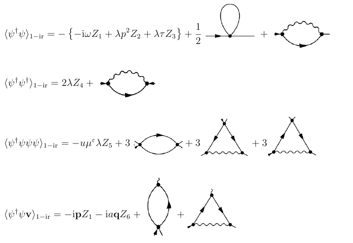
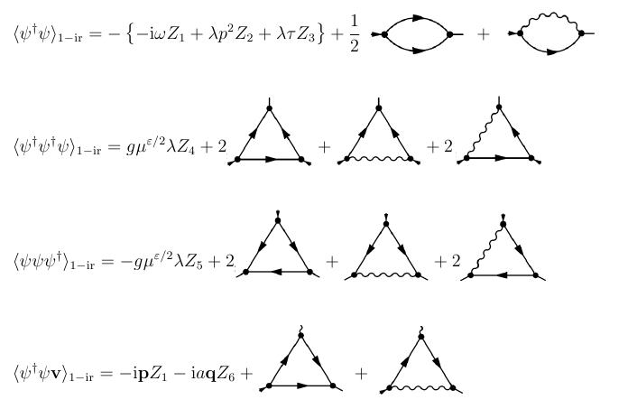
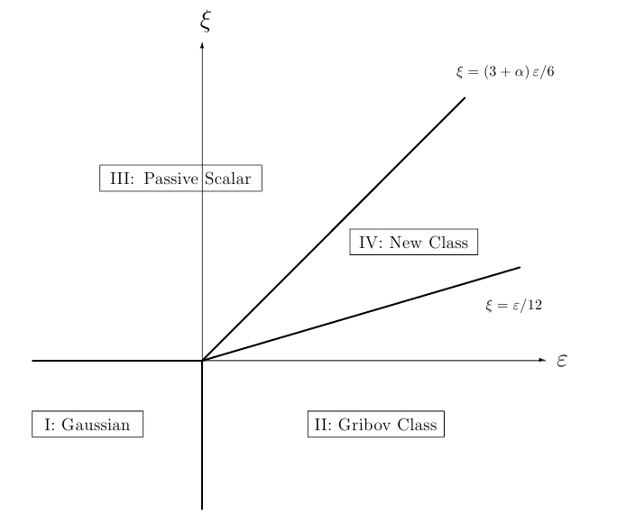
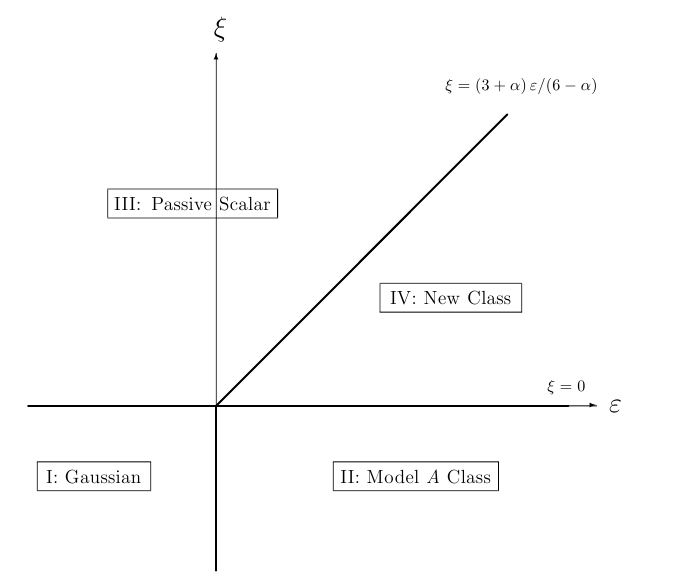

Ñ➚❮✃Ò✲Ï➴Ò➴Ð➪ÓÐ➹Ñ✃➮➱ ➹❰ÑÓ➘➚ÐÑÒ➶➴❮❮Û➱ Ó❮➮➶➴ÐÑ➮Ò➴Ò
Ô➮➬➮×➴Ñ✃➮➱ Ô➚✃Ó❐ÜÒ➴Ò
✃➚Ô➴➘Ð➚
Ô➮➬➮✃➮ ➶ÛÑ❰✃➮Õ Ý❮➴Ð➹➮➱ ➮ Ý❐➴❒➴❮Ò➚Ð❮ÛÕ ×➚ÑÒ➮Ö
❒➚➹➮ÑÒ➴ÐÑ✃➚ß Ð➚➪❰Ò➚
Ò➴❒➚ ✿
➶ëèÿíèå òóðáóëåíòíîãî ïåðåìåøèâàíèÿ íà
êðèòè÷åñêîå ïîâåäåíèå â ïðèñóòñòâèè
ñæèìàåìîñòè✿ ðåíîðìãðóïïîâîé àíàëèç äâóõ
ìîäåëåé
❒àãèñòðàíò ✿ ✃àïóñòèí ➚✳ Ñ✳
❮àó÷íûé ðóêîâîäèòåëü ✿ Ïðîô✳ ➚íòîíîâ ❮✳ ➶✳
Ðåöåíçåíò ✿ Ïðîô✳ ➚äæåìÿí ❐✳ Ö✳
Ñ➚❮✃Ò✲Ï➴Ò➴Ð➪ÓÐ➹
✷✵✶✶
✶ ➶âåäåíèå
❒íîãî÷èñëåííûå ôèçè÷åñêèå ñèñòåìû ñàìîé ðàçíîé ïðèðîäû ✭ìàãíå✲
òèêè✱ ñèñòåìû òèïà ãàç✲æèäêîñòü✱ áèíàðíûå ñìåñè✮ îáíàðóæèâàþò íåîáû÷✲
íîå ïîâåäåíèå âáëèçè òî÷êè ôàçîâîãî ïåðåõîäà âòîðîãî ðîäà ✭êðèòè÷å✲
ñêîé òî÷êè✮✳ ✃îððåëÿöèîííûå ôóíêöèè è íåêîòîðûå òåðìîäèíàìè÷åñêèå
âåëè÷èíû ✭òåïëîåìêîñòü✱ âîñïðèèì÷èâîñòü è äð✳✮ äåìîíñòðèðóþò ñòå✲
ïåííîå ïîâåäåíèå ✭êðèòè÷åñêèé ñêåéëèíã✮✳ Ïðè ýòîì ñîîòâåòñòâóþùèå
êðèòè÷åñêèå ïîêàçàòåëè îêàçûâàþòñÿ óíèâåðñàëüíûìè✱ ò✳å✳ çàâèñÿùèìè
ëèøü îò ãëîáàëüíûõ õàðàêòåðèñòèê ñèñòåìû✱ òàêèõ êàê ðàçìåðíîñòü ïðî✲
ñòðàíñòâà èëè ñèììåòðèÿ✳ Ýòî ñâîéñòâî ïîçâîëÿåò îáúåäèíÿòü ñèñòåìû✱
ðàçëè÷àþùèåñÿ ìíîæåñòâîì íåñóùåñòâåííûõ ✭ñ òî÷êè çðåíèÿ êðèòè÷å✲
ñêîãî ïîâåäåíèÿ✮ äåòàëåé â åäèíûå êëàññû óíèâåðñàëüíîñòè✱ õàðàêòåðè✲
çóåìûå îäíèì è òåì æå íàáîðîì êðèòè÷åñêèõ ïîêàçàòåëåé è ñêåéëèíãî✲
âûõ ôóíêöèé✳
Ïîñëåäîâàòåëüíîå êîëè÷åñòâåííîå îïèñàíèå êðèòè÷åñêîãî ïîâåäåíèÿ
ìîæíî äàòü â ðàìêàõ ìåòîäà Ð➹✳ ➶ ðåíîðìãðóïïîâîì ïîäõîäå âîçìîæíûå
êðèòè÷åñêèå ðåæèìû ñâÿçûâàþòñÿ ñ èíôðàêðàñíî✲óñòîé÷èâûìè íåïî✲
äâèæíûìè òî÷êàìè íåêîòîðîé ðåíîðìèðóåìîé òåîðåòèêî✲ïîëåâîé ìîäå✲
ëè✳ Öåëü òåîðèè ✕ âûäåëèòü îñíîâíûå êëàññû óíèâåðñàëüíîñòè✱ óñòàíî✲
âèòü ñóùåñòâîâàíèå íóæíûõ íåïîäâèæíûõ òî÷åê äëÿ ñîîòâåòñòâóþùèõ
ìîäåëåé✱ âû÷èñëèòü äëÿ íèõ êðèòè÷åñêèå ðàçìåðíîñòè è ñêåéëèíãîâûå
ôóíêöèè â ðàìêàõ êàêîé✲ëèáî ïîñëåäîâàòåëüíîé òåîðèè âîçìóùåíèé✳ Ïî✲
äðîáíîå èçëîæåíèå ðåíîðìãðóïïîâûõ ìåòîäîâ è èõ ïðèìåíåíèÿ ê òåîðèè
ôàçîâûõ ïåðåõîäîâ ìîæíî íàéòè â ìîíîãðàôèè ❬✶❪✳
❮àèáîëåå òèïè÷íûå ôàçîâûå ïåðåõîäû â ðàâíîâåñíûõ ñèñòåìàõ ïðè✲
íàäëåæàò ê êëàññó óíèâåðñàëüíîñòè O(N)✲ñèììåòðè÷íîé ìîäåëè ϕ4 N ✲
êîìïîíåíòíîãî ñêàëÿðíîãî ïàðàìåòðà ïîðÿäêà✳ ➴➻ êðèòè÷åñêèå ïîêàçà✲
òåëè çàâèñÿò òîëüêî îò N è ðàçìåðíîñòè ïðîñòðàíñòâà d✳ ❰íè ìîãóò áûòü
ðàññ÷èòàíû â âèäå ðàçëîæåíèÿ ïî ε = 4 − d èëè â ðàìêàõ äðóãèõ ñõåì
òåîðèè âîçìóùåíèÿ✱ ñì✳ ìîíîãðàôèè ❬✶✱ ✷❪ è öèòèðîâàííóþ òàì ëèòåðà✲
òóðó✳ ➪îëüøîé èíòåðåñ â ïîñëåäíèå ãîäû ïðèâëåêàþò ôàçîâûå ïåðåõîäû
â ñèñòåìàõ✱ äàëåêèõ îò ñîñòîÿíèÿ òåðìîäèíàìè÷åñêîãî ðàâíîâåñèÿ✳ ➮õ
êðèòè÷åñêîå ïîâåäåíèå ãîðàçäî áîëåå ìíîãîîáðàçíî è ïîêà íåäîñòàòî÷íî
õîðîøî èçó÷åíî✳
Ïîêàçàòåëüíûì ïðèìåðîì ÿâëÿþòñÿ ðàçíîîáðàçíûå è ÷àñòî âñòðå÷à✲
þùèåñÿ â ïðèðîäå ïðîöåññû ðàñïðîñòðàíåíèÿ✱ òàêèå êàê✿ ýïèäåìèè✱ êà✲
òàëèòè÷åñêèå ðåàêöèè✱ ëåñíûå ïîæàðû✱ äèôôóçèÿ â ïîðèñòûõ èëè ôëóê✲
òóèðóþùèõ ñðåäàõ✳ ➘ëÿ îïðåäåëåííîñòè ìû áóäåì èñïîëüçîâàòü òåð✲
ìèíîëîãèþ ïåðâîãî ñëó÷àÿ ✭ýïèäåìèé✮✳ ➶ çàâèñèìîñòè îò êîíêðåòíûõ
óñëîâèé ïðîöåññ ðàñïðîñòðàíåíèÿ ✭â ñëó÷àå ýïèäåìèé ✕ ðàñïðîñòðàíå✲
✶
íèÿ èíôåêöèè✮ ìîæåò ëèáî ïðîäîëæàòüñÿ è îõâàòèòü âñþ ïîïóëÿöèþ✱
ëèáî ïîëíîñòüþ ïðåêðàòèòüñÿ ÷åðåç íåêîòîðîå âðåìÿ✳ ✃àê òåïåðü èç✲
âåñòíî✱ ïåðåõîä ✭ïðè èçìåíåíèè ïàðàìåòðîâ òèïà âåðîÿòíîñòåé èíôèöè✲
ðîâàíèÿ✮ îò ôëóêòóèðóþùåãî ✭àêòèâíîãî✮ ê àáñîðáöèîííîìó ✭íåàêòèâ✲
íîìó✮ ñîñòîÿíèþ ÿâëÿåòñÿ ôàçîâûì ïåðåõîäîì âòîðîãî ðîäà è îïèñûâà✲
åòñÿ íåñêîëüêèìè êëàññàìè óíèâåðñàëüíîñòè✳ Ïðîñòàÿ ìîäåëü îïèñûâà✲
þùàÿ ðàñïðîñòðàíåíèå àãåíòà ✭íàïðèìåð✱ èíôåêöèîííûå çàáîëåâàíèÿ✮
✕ ìîäåëü ➹ðèáîâà✳ Ýòà ìîäåëü ýêâèâàëåíòíà Ðåäæåîííîé òåîðèè ïîëÿ
è áûëà èçó÷åíà â ðàìêàõ Ð➹ ïîäõîäà è ε✲ðàçëîæåíèÿ✳ ❰äíàêî✱ êàê óæå
äàâíî ïîíÿëè✱ ïîâåäåíèå ðåàëüíîé ñèñòåìû âáëèçè êðèòè÷åñêîé òî÷êè
ÿâëÿåòñÿ ÷ðåçâû÷àéíî ÷óâñòâèòåëüíûì ê âíåøíèì âîçäåéñòâèÿì✿ ê ãðà✲
âèòàöèè✱ äâèæåíèþ ñàìîé ñðåäû✱ íàëè÷èþ ïðèìåñåé è ò✳ ä✳ ➪îëåå òîãî✱
íåêîòîðûå íàðóøåíèÿ ✭ïðèìåñè èëè òóðáóëåíòíîå ïåðåìåøèâàíèå✮ ìîãóò
ïðèâåñòè ê ñîâåðøåííî íîâûì òèïàì êðèòè÷åñêîãî ïîâåäåíèÿ ñ áîãàòû✲
√
ìè è âåñüìà ýêçîòè÷åñêèìè ñâîéñòâàìè✱ íàïðèìåð✱ ðàçëîæåíèå ïî ε✱ à
íå ïî ε ❬✼✱✽❪✳ Ýòè âîïðîñû ñòàíîâÿòñÿ îñîáåííî àêòóàëüíûìè äëÿ íåðàâ✲
íîâåñíûõ ôàçîâûõ ïåðåõîäîâ✱ òàê êàê èäåàëüíûå óñëîâèÿ äëÿ ✏÷èñòîãî✑
ñòàöèîíàðíîãî êðèòè÷åñêîãî ñîñòîÿíèÿ âðÿä ëè ìîãóò áûòü äîñòèãíóòû
â ðåàëüíûõ õèìè÷åñêèõ èëè áèîëîãè÷åñêèõ ñèñòåìàõ✱ à òàêæå âëèÿíèå
ðàçëè÷íûõ íàðóøåíèé ✭ãðàâèòàöèè✱ ïåðåìåøèâàíèÿ è ò✳ä✳✮ íèêîãäà íå
ìîæåò áûòü ïîëíîñòüþ èñêëþ÷åíî✳ ➶ ÷àñòíîñòè✱ íåëüçÿ ïðåíåáðåãàòü
ýôôåêòàìè òóðáóëåíòíîñòè â õèìè÷åñêèõ êàòàëèòè÷åñêèõ ðåàêöèÿõ èëè
ëåñíûõ ïîæàðàõ✳ Òàê æå ìîæíî ïðåäïîëîæèòü✱ ÷òî àòìîñôåðíàÿ òóð✲
áóëåíòíîñòü ìîæåò ñûãðàòü âàæíóþ ðîëü â ðàñïðîñòðàíåíèè èíôåêöè✲
îííûõ çàáîëåâàíèé íà ëåòàþùèõ íàñåêîìûõ èëè ïòèöàõ✳ ➮ññëåäîâàíèå
âëèÿíèÿ ðàçëè÷íûõ âèäîâ ïåðåìåøèâàíèé ✭ëàìèíàðíûõ ñäâèãîâûõ òå✲
÷åíèé✱ òóðáóëåíòíîé êîíâåêöèè è òàê äàëåå✮ íà ïîâåäåíèå êðèòè÷åñêîé
æèäêîñòè ✭íàïðèìåð✱ áèíàðíàÿ æèäêàÿ ñìåñü✮ ïîêàçàëî✱ ÷òî ýòî ïåðå✲
ìåøèâàíèå ìîæåò ðàçðóøèòü îáû÷íîå êðèòè÷åñêîå ïîâåäåíèå ñèñòåìû✱
õàðàêòåðíîå äëÿ ψ4 èëè Ðåäæåîííîé ìîäåëåé✳ ➶ äàííîé ðàáîòå ìû èçó✲
÷àåì âëèÿíèå ýôôåêòîâ òóðáóëåíòíîãî ïåðåìåøèâàíèÿ íà êðèòè÷åñêîå
ïîâåäåíèå äâóõ ñèñòåì âáëèçè èõ êðèòè÷åñêèõ òî÷åê✱ îáðàùàÿ îñîáîå
âíèìàíèå íà ñæèìàåìîñòü æèäêîñòè✳ ➘ëÿ îïèñàíèÿ ôàçîâûõ ïåðåõîäîâ
ìû èñïîëüçóåì äâå ìîäåëè äèíàìè÷åñêîãî êðèòè÷åñêîãî ïîâåäåíèÿ✳ Ïåð✲
âàÿ èç ìîäåëü✱ îïèñûâàåò ôàçîâûé ïåðåõîä ìåæäó ò✳í✳ àáñîðáöèîííûì
✭íåàêòèâíûì✮ è ôëóêòóàöèîííûì ✭àêòèâíûì✮ ñîñòîÿíèÿìè íåêîòîðîé
ðåàêöèîííî✲äèôôóçèîííîé ñèñòåìû✳ ➪îëåå êîíêðåòíî áóäåò ðàññìîòðåí
ïðîöåññ òèïà ➹ðèáîâà✱ íàçûâàåìûé òàê ïîòîìó✱ ÷òî ñîîòâåòñòâóþùàÿ
ïîëåâàÿ ìîäåëü áëèçêà ê õîðîøî èçâåñòíîé Ðåäæåîííîé òåîðèè ïîëÿ ❬✶❪✳
➶òîðàÿ æå ✕ ðåëàêñàöèîííàÿ äèíàìèêà íåñîõðàíÿþùåãîñÿ ñêàëÿðíîãî
ïàðàìåòðà ïîðÿäêà äëÿ ìîäåëè ñ âçàèìîäåéñòâèåì òèïà ϕ4✳ ➘ëÿ ìîäåëè
✷
òóðáóëåíòíîãî ïåðåìåøèâàíèÿ ìû èñïîëüçóåì èçâåñòíóþ ìîäåëü ✃àçàí✲
öåâà ✲ ✃ðåé÷íàíà✳ ➶ íàøåì ñëó÷àå îñîáåííî âàæíî✱ ÷òî òàêîå îïèñàíèå
ïåðåìåøèâàíèÿ ïîçâîëÿåò ëåãêî ìîäåëèðîâàòü ñæèìàåìóþ æèäêîñòü✱
÷òî îêàçûâàåòñÿ âåñüìà òðóäíî✱ åñëè ñêîðîñòü ìîäåëèðóåòñÿ äèíàìè÷å✲
ñêèìè óðàâíåíèÿìè✳
Ïëàí ðàáîòû òàêîâ✳ ➶ ðàçäåëå ✷ äàíî îïèñàíèå ìîäåëåé â òåðìèíàõ
òåîðèè ïîëÿ ñ ñîîòâåòñòâóþùåé äèàãðàììíîé òåõíèêîé✳ ➶ ðàçäåëå ✸ àíà✲
ëèçèðóþòñÿ óëüòðàôèîëåòîâûå ðàñõîäèìîñòè ìîäåëåé✳ Ïîêàçàíî✱ ÷òî ìî✲
äåëè ÿâëÿþòñÿ ìóëüòèïëèêàòèâíî✲ðåíîðìèðóåìûìè✱ è ïðèâåäåíû ðåíîð✲
ìèðîâàííûå ôóíêöèîíàëû äåéñòâèÿ✳ Òàêèì îáðàçîì✱ ìîæíî ïîëó÷èòü
óðàâíåíèÿ Ð➹ è ââåñòè Ð➹✲ôóíêöèè ✭β ôóíêöèè è àíîìàëüíûå ðàçìåð✲
íîñòè γ✮ ñòàíäàðòíûì îáðàçîì ✭ðàçäåë ✹✮✳ ➶ ðàçäåëå ✺ ïîêàçàíî✱ ÷òî â çà✲
âèñèìîñòè îò ñîîòíîøåíèÿ ìåæäó ïîêàçàòåëåì ξ è ïðîñòðàíñòâåííîé ðàç✲
ìåðíîñòüþ d✱ îáå ñèñòåìû èìåþò ÷åòûðå ðàçëè÷íûå òèïû êðèòè÷åñêîãî
ïîâåäåíèÿ✱ ñâÿçàííûå ñ ÷åòûðüìÿ âîçìîæíûìè íåïîäâèæíûìè òî÷êàìè
óðàâíåíèÿ ðåíîðìãðóïïû✳ ❰êàçûâàåòñÿ✱ ÷òî òðè èç ÷åòûðåõ íåïîäâèæ✲
íûõ òî÷åê â îáåèõ ìîäåëÿõ îòâå÷àþò óæå èçâåñòíûì òèïàì êðèòè÷åñêîãî
ïîâåäåíèÿ✿ ñâîáîäíîé òåîðèè✱ ïàññèâíîìó ñêàëÿðíîìó ïîëþ è îáû÷íîìó
ïðîöåññó✱ îòâå÷àþùåìó ñîîòâåòñòâóþùåìó âçàèìîäåéñòâèþ✳ ×åòâåðòûå
òî÷êè îòíîñÿòñÿ ê íîâûì íåðàâíîâåñíûì êëàññàì óíèâåðñàëüíîñòè✱ äëÿ
êîòîðûõ îäíîâðåìåííî ñóùåñòâåííû è íåëèíåéíîñòè ìîäåëåé è òóðáó✲
ëåíòíîå ïåðåìåøèâàíèå✳ ➶ îäíîïåòëåâîì ïðèáëèæåíèè ïîëó÷àåòñÿ✱ ÷òî
äëÿ çàäàííûõ çíà÷åíèé ïàðàìåòðîâ ε ✭îòêëîíåíèå ðàçìåðíîñòè îò ëîãà✲
ðèôìè÷åñêîé✮ è ξ ✭ïîêàçàòåëü ñòåïåíè â êîððåëÿòîðå ïîëÿ ñêîðîñòè✮ ïî
êîòîðûì èäåò ðàçëîæåíèå✱ èíôðàêðàñíî✲óñòîé÷èâîé ÿâëÿåòñÿ ëèøü îä✲
íà èç òî÷åê✱ òî åñòü ðåàëèçóåòñÿ îïðåäåëåííûé êðèòè÷åñêèé ðåæèì✳ ➶
ýòîì îòíîøåíèè ðåçóëüòàòû áëèçêè ê ïîëó÷åííûì ðàíåå â ðàáîòå ❬✶✸❪✱ ãäå
ðàññìàòðèâàëîñü âëèÿíèå òóðáóëåíòíîãî ïåðåìåøèâàíèÿ íà êðèòè÷åñêîå
ïîâåäåíèå ðàâíîâåñíîé ñèñòåìû òèïà ϕ4✳ ➪ûëè âû÷èñëåíû â îäíîïåòëå✲
âîì ïðèáëèæåíèè êîíñòàíòû ïåðåíîðìèðîâêè✱ Ð➹✲ôóíêöèé✱ îáëàñòè ➮✃
óñòîé÷èâîñòè è êðèòè÷åñêèå ðàçìåðíîñòè✱ ïðè÷åì íåêîòîðûå èç ðåçóëü✲
òàòîâ îêàçàëèñü òî÷íûìè✳ ➶ îáùåì ñëó÷àå✱ êðèòè÷åñêèå èíäåêñû è ãðà✲
íèöû ìåæäó îáëàñòÿìè óñòîé÷èâîñòè êðèòè÷åñêèõ ðåæèìîâ â ïëîñêîñòè
ε✕ξ çàâèñÿò îò ñòåïåíè ñæèìàåìîñòè✳
Ïîëó÷åííûå ðåçóëüòàòû îáñóæäàþòñÿ â ðàçäåëå ✼✳ ❰ñíîâíîé êà÷å✲
ñòâåííûé âûâîä èç íàøåãî àíàëèçà ÿâëÿåòñÿ òàêèì✳ ➘ëÿ îáåèõ ìîäåëåé
ñæèìàåìîñòü ïîâûøàåò ðîëü íåëèíåéíûõ ÷ëåíîâ â äèíàìè÷åñêèõ óðàâ✲
íåíèÿõ✳ ❰áëàñòü â ε✕ξ ✲ïëîñêîñòè✱ ãäå óñòîé÷èâ íîâûé íåòðèâèàëüíûé
ðåæèì✱ ñòàíîâèòñÿ øèðå ïðè âîçðàñòàíèè ñòåïåíè ñæèìàåìîñòè✳ ➶ ñëó✲
÷àå íåñæèìàåìîé æèäêîñòè✱ íàèáîëåå ðåàëèñòè÷íûå çíà÷åíèÿ d = 3 è
ξ = 4/3 ëåæàò â îáëàñòè óñòîé÷èâîñòè ðåæèìà ïàññèâíîãî ñêàëÿðíîãî
✸
ïîëÿ✱ òîåñòü íåëèíåéíûå ÷ëåíû íå èìåþò çíà÷åíèÿ äëÿ êðèòè÷åñêîãî
ïîâåäåíèÿ✳ ➴ñëè ñæèìàåìîñòü ñòàíîâèòñÿ äîñòàòî÷íî ñèëüíîé✱ ýòè çíà✲
÷åíèÿ ✭d è ξ✮ ïîïàäàþò â îáëàñòü óñòîé÷èâîñòè íîâîãî ðåæèìà✱ ãäå è
àäâåêöèÿ è íåëèíåéíîñòü ÿâëÿþòñÿ ñóùåñòâåííûìè✳ Ýòè îáùèå ñîîáðà✲
æåíèÿ ïðîèëëþñòðèðîâàíû íà ïðèìåðå îáëàêà ïðèìåñíûõ ÷àñòèö✱ êîòî✲
ðûå ñëó÷àéíî äâèãàþòñÿ â áëèçêîé ê êðèòè÷åñêîé òóðáóëåíòíîé ñðåäå✳
➘ëÿ ñëàáî ñæèìàåìîé æèäêîñòè ðàñïðîñòðàíåíèå òàêîãî îáëàêà îïðåäå✲
ëÿåòñÿ òîëüêî òóðáóëåíòíûì ïåðåíîñîì✳ ➴ñëè ñæèìàåìîñòü ñòàíîâèòñÿ
äîñòàòî÷íî ñèëüíîé✱ ñèñòåìà ïîïàäàåò â íîâûé êëàññ óíèâåðñàëüíîñòè✱
è ðàñøèðåíèå îáëàêà ñòàíîâèòñÿ áûñòðåå çà ñ÷åò êîìáèíèðîâàííîãî âîç✲
äåéñòâèÿ ïåðåìåøèâàíèÿ è íåëèíåéíûõ ÷ëåíîâ✳ Ýòî ðàñøèðåíèå ÿâíî çà✲
âèñèò îò ñòåïåíè ñæèìàåìîñòè è îòëè÷àåòñÿ îò èçâåñòíûõ ✏ 1/2 çàêîíà✏
äëÿ îáû÷íîé äèôôóçèè è îò ✏4/3 çàêîíà Ðè÷àðäñîíà✑ äëÿ òóðáóëåíòíîãî
ïåðåíîñà✳
✷ ❰ïèñàíèå ìîäåëè✳ Òåîðåòèêî✲ïîëåâàÿ ôîð✲
ìóëèðîâêà ìîäåëè
➶ ❐àíæåâåíîâîé ôîðìóëèðîâêå íàøè ìîäåëè îïðåäåëåíû ñòîõàñòè✲
÷åñêèìè äèôôåðåíöèàëüíûìè óðàâíåíèÿìè äëÿ ïàðàìåòðà ïîðÿäêà ψ =
ψ(t, x)✿
∂tψ = λ0 (−τ0 + ∂2)ψ − V (ψ) + ζ,
✭✶✮
➹äå ∂t = ∂/∂t✱ ∂2 ✕ îïåðàòîð ❐àïëàñà✱ λ0 > 0 ✕ êèíåìàòè÷åñêèé êîýôôè✲
öèåíò äèôôóçèè è τ0 ∝ (T −Tc) ✕ îòêëîíåíèå òåìïåðàòóðû èëè åå àíàëîãà
îò êðèòè÷åñêîãî çíà÷åíèÿ✳ ❮åëèíåéíûé ÷ëåí èìååò âèä V (ψ) = u0ψ3/3!
äëÿ ìîäåëè ❆ è V (ψ) = g0ψ2/2 äëÿ ïðîöåññà ➹ðèáîâà❀ g0 è u0 > 0 ✕
êîíñòàíòû ñâÿçè✳ ➹àóññîâ øóì ζ = ζ(t, x) ñ íóëåâûì ñðåäíèì çàäàåòñÿ
ïàðíîé êîððåëÿöèîííîé ôóíêöèåé✿
ζ(t, x)ζ(t , x ) = 2λ0δ(t − t )δ(d)(x − x )
✭✷✮
äëÿ ìîäåëè ❆ è
ζ(t, x)ζ(t , x ) = g0λ0 ψ(t, x) δ(t − t )δ(d)(x − x )
✭✸✮
äëÿ ïðîöåññà ➹ðèáîâà✳
d ✕ ðàçìåðíîñòü ïðîñòðàíñòâà x✳ ❒íîæèòåëü ψ â ïåðåäíåé ÷àñòè êîðåë✲
ëÿòîðà ✭✸✮ îáåñïå÷èâàåò ïîëíîå èñ÷åçíîâåíèå ôëóêòóàöèé â íåàêòèâíîé
✭àáñîðáöèîííîé✮ ôàçå✳ ✭Òàêàÿ ñïåöèôè÷åñêàÿ ôîðìà àìïëèòóäû ìîæåò
✹
áûòü ïîëó÷åíà â ðåçóëüòàòå ïåðåðàñòÿæåíèÿ øóìà è ïîëÿ✮✳ ➚ ÷ëåí
2λ0 â ✭✷✮ ñâÿçàí ñ ôëóêòóàöèîííî✲äèññèïàöèîííîé òåîðåìîé✿ îí îáåñïå✲
÷èâàåò ñîîòâåòñòâèå ñ ñòàòè÷åñêîé ìîäåëüþ ψ4 ✳ ➬äåñü è äàëåå çàòðàâî÷✲
íûå ✭íåðåíîðìèðîâàííûå✮ ïàðàìåòðû îáîçíà÷åíû èíäåêñîì ✏ ✵✳✑ ➮õ ïå✲
ðåíîðìèðîâàííûå àíàëîãè ✭áåç èíäåêñà✮ ïîÿâÿòñÿ ïîçæå✳ Ñòîõàñòè÷åñêèå
ïðîáëåìû ✭✶✮✱ ✭✷✮✱ ✭✸✮ ìîãóò áûòü ïåðåôîðìóëèðîâàíû â âèäå òåîðåòèêî✲
ïîëåâûõ ìîäåëåé ñ óäâîåííûì íàáîðîì ïîëåé Φ = {ψ, ψ†}✳ ➶ òàêîé ôîð✲
ìóëèðîâêå îíè áóäóò îïèñûâàòüñÿ ôóíêöèîíàëàìè äåéñòâèÿ
S(ψ, ψ†) = ψ† −∂t + λ0∂2 − λ0τ0 ψ + λ0(ψ†)2 − u0ψ†ψ3/3!
✭✹✮
äëÿ ìîäåëè ❆ è
g
S(ψ, ψ†) = ψ†(−∂
0λ0
t + λ0∂2 − λ0τ0)ψ +
(ψ†)2ψ − ψ†ψ2
✭✺✮
2
äëÿ ìîäåëè ➹ðèáîâà✳ ➹äå✱ ψ† = ψ†(t, x) ✕ âñïîìîãàòåëüíîå ✏ïîëå îòêëèêà✑✳
➬äåñü ïîäðàçóìåâàåòñÿ èíòåãðèðîâàíèå ïî àðãóìåíòàì ïîëåé✱ íàïðèìåð
ψ†∂tψ =
dt
dxψ†(t, x)∂tψ(t, x).
Òåîðåòèêî✲ïîëåâàÿ ôîðìóëèðîâêà îçíà÷àåò✱ ÷òî ñòàòèñòè÷åñêèå ñðåäíèå
ñëó÷àéíûõ âåëè÷èí â èñõîäíîé ñòîõàñòè÷åñêîé ïðîáëåìå ìîãóò áûòü ïðåä✲
ñòàâëåíû êàê ôóíêöèîíàëüíûå èíòåãðàëû ñ ïîëíûìè íàáîðàìè ïîëåé ñ
âåñîì exp S(Φ)✳ ➚ ýòî åñòü íè÷òî èíîå✱ êàê ôóíêöèè ➹ðèíà òåîðåòèêî✲
ïîëåâûõ ìîäåëåé ñ äåéñòâèÿìè ✭✹✮✱ ✭✺✮✳ ➘ëÿ ïðèìåðà✱ ëèíåéíàÿ ôóíêöèÿ
îòêëèêà çàäà÷ ✭✶✮✱ ✭✷✮✱ ✭✸✮ çàäàåòñÿ ôóíêöèåé ➹ðèíà
G = ψ(t, x)ψ†(t , x ) =
Dψ
Dψ† ψ(t, x)ψ†(t , x ) exp S(ψ, ψ†)
✭✻✮
äëÿ êàæäîé êîíêðåòíîé ìîäåëè✳ ❒îäåëü ✭✺✮ ïîäðàçóìåâàåò ñòàíäàðòíóþ
Ôåéíìàíîâñêóþ äèàãðàììíóþ òåõíèêó ñ îäíèì ïðîïàãàòîðîì ψψ† 0 è
äâóìÿ òðîéíûìè âåðøèíàìè ∼ (ψ†)2ψ✱ ψ†ψ2✳ ➶ èìïóëüñíî✲âðåìåííîì è
÷àñòîòíî✲èìïóëüñíîì ïðåäñòàâëåíèè ïðîïàãàòîð èìååò âèä
ψψ† 0(t, k) = θ(t) exp −λ0(k2 + τ0)t ,
1
ψψ† 0(ω, k) =
.
✭✼✮
−iω + λ0 (k2 + τ0)
θ(. . . ) ✕ ôóíêöèÿ Õåâèñàéäà✱ èç✲çà ÷åãî ïðîïàãàòîð ✭✼✮ ÿâëÿåòñÿ çàïàç✲
äûâàþùèì✳ ➶ñëåäñòâèå ýòîãî✱ ïðè àíàëèçå äèàãðàìì ñòàíîâèòñÿ ÿñíî✱
✺
÷òî âñå ôóíêöèè ➹ðèíà✱ êîòîðûå çàâèñÿò òîëüêî îò ïîëåé ψ èëè ψ†✱ îáÿ✲
çàòåëüíî èìåþò çàìêíóòûå öèêëû✱ è ïîýòîìó âñå òàêèå ôóíêöèè ➹ðèíà
ðàâíû íóëþ✳ ➘ëÿ ôóíêöèé ψ† . . . ψ† ýòîò ôàêò ÿâëÿåòñÿ îáùèì ñëåä✲
ñòâèåì ïðè÷èííîñòè✱ êîòîðàÿ ñïðàâåäëèâà äëÿ ëþáîé ñòîõàñòè÷åñêîé ìî✲
äåëè❀ ñì✳ íàïðèìåð✱ îáñóæäåíèå â ❬✷❪✳
❰áíóëåíèå ôóíêöèé ψ . . . ψ â ìîäåëè ✭✺✮ ìîæåò ðàññìàòðèâàòüñÿ êàê
ñëåäñòâèå ñèììåòðèè
ψ(t, x) → ψ†(−t, −x),
ψ†(t, x) → ψ(−t, −x),
g0 → −g0.
✭✽✮
❰òðàæåíèå êîíñòàíòû g0 íà ñàìîì äåëå íåñóùåñòâåííî✱ ïîñêîëüêó✱ êàê
ëåãêî âèäåòü✱ â ìîäåëè ✭✺✮ ôàêòè÷åñêèé ïàðàìåòð ðàçëîæåíèÿ â òåîðèè
âîçìóùåíèé g2✱ à íå g
0
0✳ ➶ äàëüíåéøåì ìû áóäåì îáîçíà÷àòü åãî êàê
u0 ≡ g2✳
0
➶ äîïîëíåíèè ê ✭✼✮ äèàãðàììíàÿ òåõíèêà ìîäåëè ❆ âêëþ÷àåò â ñåáÿ
ïðîïàãàòîð ψψ 0✱ êîòîðûé èìååò âèä✿
1
ψψ 0(t, k) =
exp −λ0(k2 + τ0)|t| ,
(k2 + τ0)
2λ
ψψ
0
0(ω, k) =
,
✭✾✮
ω2 + λ2(k2 + τ
0
0)2
è îäíó òðîéíóþ âåðøèíó ∼ ψ†ψ3✳
➹àëèëååâî èíâàðèàíòíîå âçàèìîäåéñòâèå ñ ïîëåì ñêîðîñòè v = {vi(t, x)}
äëÿ ñæèìàåìîé æèäêîñòè ✭∂ivi = 0✮ ââîäèòñÿ ïóòåì çàìåíû
∂tψ → ∂tψ + a0 ∂i(viψ) + (a0 − 1)(vi∂i)ψ = ∇tψ + a0(∂ivi)ψ
✭✶✵✮
â ✭✶✮✳ ➹äå ∇t ≡ ∂t + vi∂i ✕ ❐àãðàíæåâà ïðîèçâîäíàÿ✱ a0 ✕ ïðîèçâîëüíûé
ïàðàìåòð è ∂i = ∂/∂xi✳ ✃àê ìû óâèäèì ïîçæå✱ ïðèñóòñòâèå íåëèíåé✲
íîñòè â ✭✶✮ îáÿçûâàåò íàñ âêëþ÷èòü îáà ÷ëåíà èç ✭✶✵✮ äëÿ îáåñïå÷åíèÿ
ìóëüòèïëèêàòèâíîé ïåðåíîðìèðóåìîñòè✳
➶ ðåàëüíîé ïðîáëåìå ïîëå v(t, x) îïèñûâàåòñÿ ñ ïîìîùüþ óðàâíå✲
íèÿ ❮àâüå✲Ñòîêñà✳ ❰äíàêî✱ ìû áóäåì èñïîëüçîâàòü èçâåñòíóþ ìîäåëü
❰áóõîâà✲✃ðåé÷íàíà✱ êîòîðàÿ âåðíî ïåðåäàåò îñíîâíûå ÷åðòû ðåàëüíîé
ðàçâèòîé òóðáóëåíòíîñòè ❬✶✻❪✳ ➶ ýòîé ìîäåëè ñêîðîñòü ïîä÷èíÿåòñÿ ➹àóñ✲
ñîâñêîìó ðàñïðåäåëåíèþ ñ íóëåâûì ñðåäíèì è çàäàåòñÿ êîððåëÿöèîííîé
ôóíêöèåé
vi(t, x)vj(t , x ) = δ(t − t ) Dij(r),
r = x − x
✭✶✶✮
ãäå
dk
1
Dij(r) = D0
{Pij(k) + αQij(k)} exp(ikr).
✭✶✷✮
(2π)d kd+ξ
k>m
✻
Pij(k) = δij − kikj/k2 Qij(k) = kikj/k2 ✕ ïîïåðå÷íûé è ïðîäîëüíûé ïðîåê✲
òîðû✱ k ≡ |k| ✕ âîëíîâîå ÷èñëî✱ D0 > 0 ✕ ìíîæèòåëü â àìïëèòóäå è α > 0
✕ïðîèçâîëüíûé ïàðàìåòð✳ Ñëó÷àé✱ êîãäà α = 0✱ ñîîòâåòñòâóåò íåñæè✲
ìàåìåìîé æèäêîñòè ✭∂ivi = 0✮✳ Ïîêàçàòåëü 0 < ξ < 2 ✕ ïðîèçâîëüíûé
ïàðàìåòð❀ ✏✃îëìîãîðîâñêîå✑ çíà÷åíèå ξ = 4/3✳ ❰áðåçàíèå â èíòåãðàëå
✭✶✷✮ ñíèçó k = m✱ ãäå m ≡ 1/L ✕âåëè÷èíà✱ îáðàòíàÿ ê ìàñøòàáó òóðáó✲
ëåíòíîñòè L✱ îáåñïå÷èâàþùàÿ ➮✃✲ðåãóëÿðèçàöèþ✳ ➴ãî òî÷íàÿ ôîðìà íå
èìååò çíà÷åíèÿ❀ ïðîñòî òàêîå îáðåçàíèå ÿâëÿåòñÿ ïðîñòåéøèì âûáîðîì
äëÿ ïðàêòè÷åñêèõ ðàñ÷åòîâ✳ Ôóíêöèîíàëû äåéñòâèÿ ñ ïîëíûì íàáîðîì
ïîëåé Φ = ψ, ψ†, v ✿
SA(Φ) = SC(Φ) + λ0(ψ†)2 − u0λ0ψ†ψ3/3!
✭✶✸✮
äëÿ ìîäåëè ❆ è
g
S
0λ0
G(Φ) = SC (Φ) +
(ψ†)2ψ − ψ†ψ2
✭✶✹✮
2
äëÿ ìîäåëè ➹ðèáîâà✱ ãäå îáùàÿ ÷àñòü ýòèõ äåéñòâèé èìååò âèä✿
SC(Φ) = ψ† −∇t + λ0 ∂2 − τ0 − a0(∂ivi) ψ + S(v),
✭✶✺✮
ïîëó÷àþòñÿ èç ✭✹✮✱ ✭✺✮ ïóòåì çàìåíû ✭✶✵✮ è äîáàâëåíèÿ ÷ëåíà✱ ñîîòâåò✲
ñòâóþùåãî ➹àóññîâñêîìó ïîëþ v ñ êîððåëÿòîðîì✭✶✶✮✱ ✭✶✷✮✿
1
S(v) = −
dt
dx
dx vi(t, x)D−1(r)vj(t, x ),
✭✶✻✮
2
ij
➹äå
D−1(r) ∝ D−1r−2d−ξ
ij
0
ÿâëÿåòñÿ ÿäðîì îáðàòíîé ëèíåéíîé îïåðàöèè äëÿ ôóíêöèè Dij(r) èç ✭✶✷✮✳
➶ äîáàâëåíèè ê ✭✼✮✱ â Ôåéíìàíîâñêîé äèàãðàììíîé òåõíèêå ✭✶✸✮✕✭✶✺✮
ïîÿâëÿåòñÿ íîâûé ïðîïàãàòîð vv 0 ✱ çàäàþùèéñÿ ñîîòíîøåíèåì ✭✶✶✮✱
✭✶✷✮ è íîâàÿ âåðøèíà
ψ†viViψ ≡ −ψ† {(vi∂i)ψ + a0(∂ivi)} ψ.
✭✶✼✮
➘ëÿ äèàãðàìì ýòî ïîäðàçóìåâàåò äîáàâëåíèå â âåðøèíó ìíîæèòåëÿ
Vi = −iki − ia0qi,
✭✶✽✮
ãäå ki ✕ èìïóëüñ ïîëÿ ψ✱ à qi ✕ èìïóëüñ ïîëÿ vi✳
✼
Ñèììåòðèÿ ψ, ψ† → −ψ, −ψ† â ìîäåëè ❆ ñîõðàíÿåòñÿ è â ïîëíîé ìî✲
äåëè ✭✶✸✮✱ â òî âðåìÿ êàê äëÿ ïîëíîé ìîäåëè ✭✶✹✮ ê ñîîòíîøåíèÿì ✭✽✮
ñëåäóåò äîáàâèòü ïðåîáðàçîâàíèå
a0 → (1 − a0),
✭✶✾✮
÷òî ëåãêî ïðîâåðèòü â ✭✶✺✮ ïóòåì èíòåãðèðîâàíèÿ ïî ÷àñòÿì✳
➶ îáåèõ ïîëíûõ ìîäåëÿõ ðîëü êîíñòàíò ñâÿçè ✭ïàðàìåòðîâ ðàçëîæå✲
íèÿ â òåîðèè âîçìóùåíèÿ✮ èãðàþò òðè ïàðàìåòðà
u0 ∼ Λ4−d,
w0 = D0/λ0 ∼ Λξ,
w0a0 ∼ Λξ.
✭✷✵✮
Ïîñëåäíèå ñîîòíîøåíèÿ âûòåêàþò èç ñîîáðàæåíèé ðàçìåðíîñòè ✭ñì✳ ñëå✲
äóþùèé ðàçäåë✮✳ ➮ç ýòèõ âûðàæåíèé ✭✷✵✮ ñëåäóåò✱ ÷òî âçàèìîäåéñòâèÿ
ψ†ψ3✱ (ψ†)2ψ è ψ†ψ2 áóäóò ëîãàðèôìè÷åñêèìè ✭êîíñòàíòà u0 ñòàíîâèòñÿ
áåçðàçìåðíîé✮ ïðè d = 4✳ Òàêèì îáðàçîì✱ äëÿ ìîäåëåé ñ îäíèì çàðÿäîì
✭✹✮✱ ✭✺✮✱ çíà÷åíèå d = dc = 4 ÿâëÿåòñÿ âåðõíåé êðèòè÷åñêîé ðàçìåð✲
íîñòüþ✱ è îòêëîíåíèå ε = 4 − dc èãðàåò ðîëü ôîðìàëüíîãî ïàðàìåòðà
ðàçëîæåíèÿ â Ð➹ ïîäõîäå✿ êðèòè÷åñêèå èíäåêñû âû÷èñëÿþòñÿ êàê ðÿäû
ïî ε✳➶çàèìîäåéñòâèå ∼ ψ†v∂ψ â ïîëíûõ ìîäåëÿõ ✭✶✸✮✱ ✭✶✹✮ ñòàíîâèòñÿ ëà✲
ãîðèôìè÷íûì✱ êîãäà ξ = 0✳ Ïàðàìåòð ξ íå ñâÿçàí ñ ïðîñòðàíñòâåííîé
ðàçìåðíîñòüþ✳ ❰äíàêî✱ äëÿ Ð➹ àíàëèçà ïîëíîé ìîäåëè âàæíî✱ ÷òîá âñå
âçàèìîäåéñòâèÿ áûëè ëîãàðèôìè÷íûìè✳ ➶ ïðîòèâíîì ñëó÷àå✱ îäíî èç
íèõ áóäåò ñëàáåå✱ ÷åì äðóãîå ñ Ð➹ òî÷êè çðåíèÿ✱ è òåì ñàìûì íå áóäåò
âëèÿòü íà ➮✃ ïîâåäåíèå â ãëàâíîì ïîðÿäêå✳ ➶ ðåçóëüòàòå✱ íåêîòîðûå èç
ñêåéëèíãîâûõ ðåæèìîâ ïîëíîé ìîäåëè áóäóò óïóùåíû✳ ➘ëÿ òîãî✱ ÷òî✲
áû èçó÷èòü âñå âîçìîæíûå êëàññû óíèâåðñàëüíîñòè✱ íàì íåîáõîäèìî✱
÷òîáû â íàøåé òåîðèè âñå âçàèìîäåéñòâèÿ ðàññìàòðèâàëèñü íà ðàâíûõ
îñíîâàíèÿõ✳ Òàêèì îáðàçîì✱ ìû áóäåò îáðàùàòüñÿ ñ ε è ξ êàê ñ ìàëûìè
ïàðàìåòðàìè îäèíàêîâîãî ïîðÿäêà✱ ε ∝ ξ✳ ➶ìåñòî ïðîñòîãî ε✲ðàçëîæåíèÿ
â îäíîçàðÿäíîé òåîðèè✱ êîîðäèíàòû ôèêñèðîâàííûõ òî÷åê✱ êðèòè÷åñêèå
ðàçìåðíîñòè è äðóãèå âåëè÷èíû áóäóò âû÷èñëÿòüñÿ â âèäå äâîéíîãî ðàç✲
ëîæåíèÿ â ε✕ξ✲ïëîñêîñòè âáëèçè íà÷àëà êîîðäèíàò✱ òî åñòü âîêðóã òî÷êè✱
â êîòîðîé âñå êîíñòàíòû â ✭✷✵✮ áåçðàçìåðíû✳ ➚íàëîãè÷íàÿ ñèòóàöèÿ áûëà
è ðàíüøå â ðàçëè÷íûõ ìîäåëÿõ òóðáóëåíòíîñòè è êðèòè÷åñêîãî ïîâåäå✲
íèÿ✱ íàïðèìåð ❬✶✷✕✶✺✱✷✵❪✳
✽
✸ ✃àíîíè÷åñêèå ðàçìåðíîñòè✱ ÓÔ✲ðàñõîäèìîñòè
è ïåðåíîðìèðîâêà
✃àê èçâåñòíî✱ àíàëèç óëüòðàôèîëåòîâûõ ✭ÓÔ✲✮ ðàñõîäèìîñòåé ñâÿ✲
çàí ñ àíàëèçîì êàíîíè÷åñêèõ ðàçìåðíîñòåé✳ ➘èíàìè÷åñêèå ìîäåëè òèïà
✭✹✮✱ ✭✺✮ è ✭✶✸✮✕✭✶✺✮✱ â îòëè÷èå îò ñòàòè÷åñêèõ✱ èìåþò äâà íåçàâèñèìûõ
ìàñøòàáà✿ ìàñøòàá âðåìåíè T è ìàñøòàá äëèíû L✳ Òàêèì îáðàçîì✱ êà✲
íîíè÷åñêàÿ ðàçìåðíîñòü ëþáîé âåëè÷èíû F ✭ïîëå èëè ïàðàìåòð✮ õàðàê✲
òåðèçóåòñÿ äâóìÿ ÷èñëàìè✿ ÷àñòîòíîé ðàçìåðíîñòüþ dω è èìïóëüñíîé
F
dk ✱ êîòîðûå îïðåäåëÿþòñÿ òàê✱ ÷òî [F ] ∼ [T ]−dωF [L]−dkF ✳ Ýòè ðàçìåðíîñòè
F
íàõîäÿòñÿ èç óñëîâèé íîðìèðîâêè
dk = −dk = 1, dω = dω = 0, dk = dk = 0, dω = −dω = 1
k
x
k
x
ω
t
ω
t
è òðåáîâàíèÿ✱ ÷òî êàæäûé ÷ëåí ôóíêöèîíàëà äåéñòâèÿ äîëæåí áûòü
áåçðàçìåðíûì ✭ïî îòíîøåíèþ ê èìïóëüñíîé è ÷àñòîòíîé ðàçìåðíîñòè
ïî îòäåëüíîñòè✮✳ ➬àòåì✱ îñíîâûâàÿñü íà dk è dω ✱ ìîæíî ââåñòè ïîëíóþ
F
F
êàíîíè÷åñêóþ ðàçìåðíîñòü dF = dk + 2dω ✳
F
F
✃àíîíè÷åñêèå ðàçìåðíîñòè äëÿ ìîäåëåé ✭✶✸✮✕✭✶✺✮ ïðèâåäåíû â òàá✲
ëèöå ✶✱ â òîì ÷èñëå è ðàçìåðíîñòè äëÿ ïåðåíîðìèðîâàííûõ ïàðàìåòðîâ
✭áåç èíäåêñà ✏✵✑✮✱ êîòîðûå ñêîðî áóäóò ââåäåíû✳ Ïîëÿ ìîäåëè ❆ îòìå÷å✲
íû èíäåêñîì ❆✱ à ïîëÿ ìîäåëè ➹ðèáîâà ✲ ●✳ Ðàçìåðíîñòè ïàðàìåòðîâ λ0✱
τ0 è ò✳ä✳ îäèíàêîâû â îáåèõ ìîäåëÿõ✳
Òàáëèöà ✶✿ ✃àíîíè÷åñêèå ðàçìåðíîñòè â ìîäåëÿõ ✭✶✸✮✲✭✶✺✮✳
F
ψA
ψ†
ψ
v
λ
τ
m✱
g2✱
w
A
G✱
0✱
0✱
0
0
u✱ w✱
ψ†
λ
τ
µ✱Λ u
α✱ a
G
0
0✱
a
dk d/2 − 1
d/2 + 1
d/2 −1
−2 ✷
✶
4 −
ξ
✵
F
d
dω
✵
✵
✵
✶
✶
✵
✵
✵
✵
✵
F
dF d/2 − 1
d/2 + 1
d/2
✶
✵
✷
✶
4 −
ξ
✵
d
✃àê óæå ãîâîðèëîñü â êîíöå ïðåäûäóùåãî ðàçäåëà✱ îáå ïîëíûå ìî✲
äåëè ëîãàðèôìè÷íû ✭âñå êîíñòàíòû ñâÿçè îäíîâðåìåííî áåçðàçìåðíûå✮
ïðè d = 4 è ξ = 0✳ Òàêèì îáðàçîì✱ ÓÔ✲ðàñõîäèìîñòè â ôóíêöèÿõ ➹ðèíà
ïðîÿâëÿþòñÿ â âèäå ïîëþñîâ ïî ε = 4 − d✱ ξ è èõ ëèíåéíûõ êîìáèíàöèé✳
Ïîëíàÿ êàíîíè÷åñêàÿ ðàçìåðíîñòü ïðîèçâîëüíîé ✶✲íåïðèâîäèìîé ôóíê✲
öèè ➹ðèíà Γ = Φ · · · Φ 1−ir çàäàåòñÿ îòíîøåíèåì ❬✷❪
dΓ = dk + 2dω = d + 2 − N
Γ
Γ
ΦdΦ,
✭✷✶✮
✾
ãäå NΦ = {Nψ, Nψ†, Nv} ✕ ÷èñëî ñîîòâåòñòâóþùèõ ïîëåé✱ âõîäÿùèõ â
ôóíêöèþ Γ✱ ïðè ýòîì ïîäðàçóìåâàåòñÿ ñóììèðîâàíèå ïî âñåì òèïàì ïî✲
ëåé✳ Ïîëíàÿ ðàçìåðíîñòü dΓ â ëîãàðèôìè÷íîé òåîðèè ✭òàêàÿ✱ ÷òî ε = ξ =
0✮ ÿâëÿåòñÿ ôîðìàëüíûì èíäåêñîì ÓÔ ðàñõîäèìîñòè δΓ = dΓ|ε=ξ=0✳ Ïî✲
âåðõíîñòíûå ÓÔ ðàñõîäèìîñòè✱ óñòðàíåíèå êîòîðûõ òðåáóåò êîíòð÷ëå✲
íîâ✱ ìîãóò ïðèñóòñòâîâàòü òîëüêî â òåõ ôóíêöèÿõ Γ✱ äëÿ êîòîðûõ δΓ íå
îòðèöàòåëüíî✳
➮ç òàáëèöû ✶ è ✭✷✶✮ íàõîäèì
δΓ = 6 − Nψ − 3Nψ† − Nv
✭✷✷✮
äëÿ ìîäåëè ❆ è
δΓ = 6 − 2Nψ − 2Nψ† − Nv
✭✷✸✮
äëÿ ìîäåëè ➹ðèáîâà✳
➶ äèíàìè÷åñêèõ ìîäåëÿõ ✶✲íåïðèâîäèìûå ôóíêöèè ➹ðèíà✱ â êîòî✲
ðûõ íåò ïîëåé ψ†✱ ðàâíû 0✳ Ïîýòîìó íåîáõîäèìî ðàññìàòðèâàòü òîëüêî
òå ôóíêöèè✱ â êîòîðûõ Nψ† ≥ 1✳ ➘ëÿ ìîäåëè ➹ðèáîâà ôóíêöèè ➹ðèíà✱
ïîñòðîåííûå òîëüêî èç ïîëåé ψ†✱ òàê æå îáíóëÿþòñÿ èç✲çà ñèììåòðèé ✭✽✮✱
✭✶✾✮✱ ïîýòîìó áóäåì ðàññìàòðèâàòü òîëüêî ôóíêöèè✱ äëÿ êîòîðûõ åùå è
Nψ ≥ 1 â ✭✷✸✮✳ ➘ëÿ ìîäåëè ❆ èç✲çà ñèììåòðèè îòðàæåíèÿ äîñòàòî÷íî
ðàññìàòðèâàòü â ✭✷✷✮ òîëüêî ôóíêöèè ñ Nψ† + Nψ êðàòíûì 2 ✳ Ñ ïîìî✲
ùüþ ýòèõ îãðàíè÷åíèé✱ àíàëèç âûðàæåíèé ✭✷✷✮✱ ✭✷✸✮ ïîêàçûâàåò✱ ÷òî â
îáåèõ ìîäåëÿõ ïîâåðõíîñòíûå ÓÔ ðàñõîäèìîñòè ìîãóò áûòü ëèøü â ñëå✲
äóþùèõ ✶✲íåïðèâîäèìûõ ôóíêöèÿõ ➹ðèíà ✭ïðèâåäåíû ñàìè ôóíêöèè✱
èíäåêñû ðàñõîäèìîñòè è âîçìîæíûå êîíòð÷ëåíû✮✿
ψ†ψ
(δ = 2)
ψ†∂tψ, ψ†∂2ψ, ψ†ψ,
ψ†ψv
(δ = 1)
ψ†(v∂)ψ, ψ†(∂v)ψ.
➘ëÿ ìîäåëè ❆ ïîâåðõíîñòíûå ðàñõîäèìîñòè ìîãóò áûòü åùå è â òàêèõ
ôóíêöèÿõ✿
ψ†ψψψ
(δ = 0)
ψ†ψ3,
äëÿ ìîäåëè ➹ðèáîâà✿
ψ†ψψ
(δ = 0)
ψ†ψ2,
ψ†ψ†ψ
(δ = 0)
(ψ†)2ψ.
Ïîâåðõíîñòíûå ðàñõîäèìîñòè â ôóíêöèÿõ ψ†ψvv ñ δ = 0 è êîíòð÷ëåíîì
ψ†ψv2✱ ïîÿâëÿþùèåñÿ ïî ðàçìåðíîñòè â îáåèõ ìîäåëÿõ✱ èñ÷åçàþò èç✲çà
✶✵
ïðèñóòñòâèÿ ➹àëèëååâîé ñèììåòðèè✳ ✶
➶ñå òàêèå ÷ëåíû ïðåäñòàâëåíû â äåéñòâèè ✭✶✸✮ è ✭✶✹✮✱ òàê ÷òî íàøè
ìîäåëè ìóëüòèïëèêàòèâíî ïåðåíîðìèðóåìû✳ ➹àëèëååâà ñèììåòðèÿ òðå✲
áóåò✱ ÷òîáû êîíòð÷ëåíû ψ†∂tψ è ψ†(v∂)ψ âõîäèëè â ïåðåíîðìèðîâàííîå
äåéñòâèå òîëüêî â ôîðìå ❐àãðàíæåâîé ïðîèçâîäíîé ψ†∇tψ✳ Òàêèì îáðà✲
çîì✱ ïåðåíîðìèðîâàííûå äåéñòâèÿ ìîãóò áûòü çàïèñàíû â âèäå✿
SR(Φ) = SR(Φ) + λZ
A
C
4(ψ†)2 − uµελZ5ψ†ψ3/3!
✭✷✹✮
äëÿ ìîäåëè ❆ è
gµε/2λ
SR(Φ) = SR(Φ) +
Z
G
C
4(ψ†)2ψ − Z5ψ†ψ2
✭✷✺✮
2
äëÿ ìîäåëè ➹ðèáîâà✱ ãäå
SR(Φ) = ψ† −Z
C
1∇t + λ
Z2∂2 − Z3τ − aZ6(∂ivi) ψ + S(v),
✭✷✻✮
à S(v) èç ✭✶✻✮✳
➬äåñü λ✱ τ✱ g✱ u è a ✕ ðåíîðìèðîâàííûå àíàëîãè ïåðâîíà÷àëüíûõ çà✲
òðàâî÷íûõ êîíñòàíò ✭êîòîðûå òåïåðü áóäóò ïîìå÷àòüñÿ èíäåêñîì ✏✵✑✮✱ è
íîðìèðîâî÷íàÿ ìàññà µ ✕ äîáàâî÷íûé ïðîèçâîëüíûé ïàðàìåòð ðåíîðìè✲
ðîâàííîé òåîðèè✳ ➶ûðàæåíèå ✭✷✹✮✕✭✷✻✮ ýêâèâàëåíòíî ìóëüòèïëèêàòèâ✲
íîé ðåíîðìèðîâêå ïîëåé ψ → ψZψ✱ ψ† → ψ†Zψ† è ïàðàìåòðîâ✿
g0 = gµε/2Zg,
u0 = gµεZu,
w0 = wµξZw,
λ0 = λZλ,
τ0 = τ Zτ ,
a0 = aZa.
✭✷✼✮
✃îíñòàíòû ðåíîðìèðîâêè Zi èìåþò ïîëþñà ïî ε è ξ è çàâèñÿò òîëüêî îò
áåçðàçìåðíûõ ïàðàìåòðîâ u✱ w✱ α è a✳
➶ñëåäñòâèå òîãî✱ ÷òî S(v) çàäàííîå ✭✶✻✮ íå ðåíîðìèðóåòñÿ✱ D0 èç ✭✶✷✮
âûðàæàåòñÿ ÷åðåç ðåíîðìèðîâàííûå ïàðàìåòðû✿ D0 = w0λ0 = wλµξ✳ Ïà✲
ðàìåòðû m è α íå ðåíîðìèðóþòñÿ✿ m0 = m✱ α0 = α✳ ➪ëàãîäàðÿ ➹àëèëåå✲
âîé ñèììåòðèè îáà ñëàãàåìûõ â êîâàðèàíòíîé ïðîèçâîäíîé ∇t ïåðåíîð✲
ìèðóþòñÿ îäíîé êîíñòàíòîé Z1✳ ➶ñëåäñòâèå ÷åãî èìååì ñîîòíîøåíèÿ✿
ZwZλ = 1,
Zm = Zα = Zv = 1.
✭✷✽✮
✶➮ñïîëüçîâàíèå ➹àëèëååâîé ñèììåòðèè ïðèìåíèìî äëÿ ïîëÿ ñêîðîñòè✱ êîòîðîå
îïèñûâàåòñÿ óðàâíåíèåì ❮àâüå✲Ñòîêñà✱ è âîáùåì ýòî íå òàê äëÿ ñïåöèàëüíûõ ìî✲
äåëåé✱ îïèñûâàþùèõ ïîëå ñêîðîñòè ñ ➹àóññîâûì ðàñïðåäåëåíèåì✳ ❰äíàêî✱ äëÿ íàøåé
èñïîëüçóåìîé ìîäåëè ýòî ñïðàâåäëèâî✳ ➘åòàëüíîå îáñóæäåíèå ïðîáëåìû áûëî ïðîâå✲
äåíî â ðàáîòå ❬✶✸❪✳ ➮ äîêàçàòåëüñòâî ñïðàâåäëèâîñòè ïðèìåíèìî è â íàøèõ ñëó÷àÿõ✱
êàê äëÿ ìîäåëè ✭✶✸✮✱ òàê è äëÿ ✭✶✹✮✳
✶✶
Ñðàâíèâàÿ âûðàæåíèÿ ✭✶✸✮✕✭✶✺✮ è ✭✷✹✮✕✭✷✻✮✱ ïîëó÷àåì ñîîòíîøåíèÿ ìåæ✲
äó êîíñòàíòàìè ðåíîðìèðîâêè Z1✕Z6 è Z èç ✭✷✼✮✿
Z1 = ZψZψ†,
Z2 = Z1Zλ,
Z3 = Z2Zτ ,
Z6 = Z1Za
✭✷✾✮
äëÿ îáåèõ ìîäåëåé✱
Z4 = ZλZ2
Z
ψ† ,
Z5 = ZλZuZ3ψ ψ†
✭✸✵✮
äëÿ ìîäåëè ❆ è
Z4 = ZgZλZ2
✭✸✶✮
ψ† Zψ ,
Z5 = ZgZλZψ†Z2ψ
äëÿ ìîäåëè ➹ðèáîâà✳ Ðåøàÿ ýòè ñîîòíîøåíèÿ îòíîñèòåëüíî êîíñòàíò ïå✲
ðåíîðìèðîâêè ïîëÿ è ïàðàìåòðîâ✱ èìååì
Zλ = Z−1Z
Z
Z
Z−2Z
1
2,
Zτ = Z−1
2
3,
Za = Z−1
1
6,
Zu = Z−1
1
2
4Z5
✭✸✷✮
äëÿ îáåèõ ìîäåëåé ✭â ìîäåëè ➹ðèáîâà ìû ïðîèçâåëè çàìåíó u = g2✱ Zu =
Z2✮✱
g
−
−
Z
1/2
1/2
ψ = Z 1/2Z 1/2Z
,
Z† = Z1/2Z
Z1/2
✭✸✸✮
1
2
4
ψ
1
2
4
äëÿ ìîäåëè ❆ è
−
−
Z
1/2
1/2
ψ = Z 1/2Z
Z1/2,
Z† = Z1/2Z1/2Z
,
✭✸✹✮
1
4
5
ψ
1
4
5
äëÿ ìîäåëè ➹ðèáîâà✳
✃îíñòàíòû ïåðåíîðìèðîâêè íàõîäÿòñÿ èç òðåáîâàíèÿ✱ ÷òî ôóíêöèè ➹ðè✲
íà ïåðåíîðìèðîâàííûõ ìîäåëåé ✭✷✹✮✕✭✷✻✮✱ êîãäà îíè ïèøóòñÿ â òåðìèíàõ
ïåðåíîðìèðîâàííûõ ïåðåìåííûõ✱ äîëæíû áûòü ÓÔ êîíå÷íûìè ✭â íàøåì
ñëó÷àå êîíå÷íûå ïðè ε → 0✱ ξ → 0✮✳ ✃îíñòàíòû Z1✕Z6 âû÷èñëÿþòñÿ ïðÿ✲
ìî èç äèàãðàìì✱ à çàòåì êîíñòàíòû èç ✭✷✼✮ íàõîäÿòñÿ èç ñîîòíîøåíèé
✭✸✷✮✕✭✸✹✮✳ ➘ëÿ òîãî✱ ÷òîáû íàéòè ïîëíûé íàáîð êîíñòàíò✱ íåîáõîäèìî
ðàññìàòðèâàòü ✶✲íåïðèâîäèìûå ôóíêöèè ➹ðèíà✱ èìåþùèå ïîâåðõíîñò✲
íûå ðàñõîäèìîñòè✳ ➶ñå ýòè ôóíêöèè áûëè ïåðå÷èñëåííûå âûøå✳ ➶ îäíî✲
ïåòëåâîì ïðèáëèæåíèè îíè ïðèâåäåíû íà ðèñóíêå ✶ äëÿ ìîäåëè ❆ è íà
ðèñóíêå ✷ äëÿ ìîäåëè ➹ðèáîâà✳ Ñïëîøíûå ëèíèè ñî ñòðåëêàìè îáîçíà✲
÷àþò ïðîïàãàòîð ✭✼✮✱ ñòðåëêà óêàçûâàåò íà ïîëå ψ†✳ Ñïëîøíûå ëèíèè áåç
ñòðåëîê ñîîòâåòñòâóåò ïðîïàãàòîðó ✭✾✮✱ à âîëíèñòûå ëèíèè îáîçíà÷àþò
ïðîïàãàòîð ñêîðîñòè vv 0 ✱ óêàçàííûé â ✭✶✶✮✳ ➶íåøíèå êîíöû ñ âõîäÿùåé
ñòðåëêè ñîîòâåòñòâóþò ïîëþ ψ†✱ à êîíöû áåç ñòðåëêè ñîîòâåòñòâóþò ψ✳
Òðîéíàÿ âåðøèíà ñ îäíîé âîëíèñòîé ëèíèåé ñîîòâåòñòâóåò ìíîæèòåëþ
✭✶✽✮✳
✶✷

Ðèñ✳ ✶✿ ❰äíîïåòëåâîå ïðèáëèæåíèå äëÿ ✶✲íåïðèâîäèìûõ ôóíêöèé ➹ðèíà
â ìîäåëè ✭✶✸✮✳
✶✸

Ðèñ✳ ✷✿ ❰äíîïåòëåâîå ïðèáëèæåíèå äëÿ ✶✲íåïðèâîäèìûõ ôóíêöèé ➹ðèíà
â ìîäåëè ✭✶✹✮✳
❒èíóñ ïåðåä ïåðâûì ñëàãàåìûì äëÿ ôóíêöèè ψ†ψ 1−ir ïîÿâëÿåòñÿ
âñëåäñòâèå óðàâíåíèÿ ➘àéñîíà✳ Ïåðâûå è ïîñëåäíèå äèàãðàììû â ôóíê✲
öèÿõ ψ†ψψ 1−ir è ψ†ψ†ψ 1−ir äëÿ ìîäåëè ➹ðèáîâà èìåþò ðàçëè÷íûé âèä
✭çåðêàëüíî îòðàæåíû✮✱ íî èõ âêëàä â êîíñòàíòû ðåíîðìèðîâêè îäèíà✲
êîâ✱ è ïîýòîìó ìû ñòàâèì ïåðåä íèìè ìíîæèòåëü ✷✳ ➪îëåå òîãî✱ ïîñëåä✲
íèå äèàãðàììû äëÿ ýòèõ ôóíêöèé èìåþò çàìêíóòûé öèêë ïðîïàãàòîðîâ
ψψ† 0 è ïîýòîìó ðàâíû 0✳ Ïî ýòîé æå ïðè÷èíå✱ ïîñëåäíèå äèàãðàììû
â âûðàæåíèè ψ†ψψψ 1−ir äëÿ ìîäåëè ❆ è ψ†ψv 1−ir äëÿ îáåèõ ìîäåëåé
îáíóëÿþòñÿ✳ ➶ñå ýëåìåíòû äèàãðàìì äîëæíû áûòü âûðàæåíû â ïåðå✲
íîðìèðîâàííûõ ïåðåìåííûõ ñ ïîìîùüþ ñîîòíîøåíèé ✭✷✼✮✕✭✷✾✮✳ ➶ îäíî✲
ïåòëåâîì ïðèáëèæåíèè Z â ïåðâûõ ñëàãàåìûõ ðèñóíêîâ ✶ è ✷ äîëæíû
áûòü çàïèñàííû äî ïåðâîãî ïîðÿäêà ìàëîñòè ïî u = g2 è w✱ â òî âðåìÿ
êàê â äèàãðàììàõ îíè äîëæíû áûòü ïðîñòî çàìåíåíû åäèíèöàìè Zi → 1✳
Òàêèì îáðàçîì✱ ïåðåõîä ê ïåðåíîðìèðîâàííûì ïåðåìåííûì â äèàãðàì✲
ìàõ äîñòèãàåòñÿ çà ñ÷åò ïðîñòîé çàìåíû λ0 → λ✱ τ0 → τ✱ g0 → gµε/2 è
w0 → wµξ✳ ➶ ðàñ÷åòàõ ìû èñïîëüçîâàëè ñõåìó ìèíèìàëüíûõ âû÷èòàíèé
✭▼❙✮✱ â êîòîðîé êîíñòàíòû ïåðåíîðìèðîâêè âûãëÿäÿò êàê Zi = 1 + ... è
èìåþò îñîáåííîñòè ïî ε è ξ✱ ñ êîýôôèöèåíòàìè çàâèñÿùèìè òîëüêî îò
áåçðàçìåðíûõ ïåðåíîðìèðîâàííûõ ïàðàìåòðîâ u✱ w✱ a è α✳ ❰äíîïåòëåâîé
✶✹
ðàñ÷åò äîâîëüíî ñõîæ ñ ðàñ÷åòîì â íåñæèìàåìîì ñëó÷àå ✭α = 0✮✱ êîòî✲
ðûé ïîäðîáíî îáñóæäàëñÿ â ❬✶✹❪ ✭ñì✳ òàêæå ❬✶✷✱✶✸❪✮✳ ➮ çäåñü ìû ïðèâåäåì
ëèøü ðåçóëüòàòû✿
w
u
Z1 = 1,
Z2 = 1 −
(3 + α),
Z3 = 1 +
,
4ξ
ε
w
3u
3w
Z4 = 1 −
α(a − 1)2,
Z5 = 1 +
−
αa2,
ξ
ε
ξ
u (4a − 1)
Z6 = 1 +
✭✸✺✮
ε
4a
äëÿ ìîäåëè ❆ è
u
u
w
u
Z1 = 1 +
,
Z2 = 1 +
−
(3 + α),
Z3 = 1 +
,
4ε
8ε
4ξ
ε
u
w
u
w
Z4 = 1 +
−
α(a − 1)2,
Z5 = 1 +
−
αa2,
ε
ξ
ε
ξ
u (4a − 1)
Z6 = 1 +
✭✸✻✮
ε
8a
äëÿ ìîäåëè ➹ðèáîâà✳
➘ëÿ óïðîùåíèÿ ïîëó÷åííûõ âûðàæåíèé✱ ìû ñäåëàëè â ✭✸✺✮ è ✭✸✻✮ çàìåíó
ïåðåìåííûõ
u → u/16π2,
w → w/16π2.
➬äåñü è äàëåå îíè áóäóò îáîçíà÷àòüñÿ òåìè æå ñèìâîëàìè u è w✳ ➘ëÿ
w = 0✱ áûëè óæå õîðîøî èçâåñòíû îäíîïåòëåâûå ðåçóëüòàòû â ìîäåëÿõ
✭✹✮✱ ✭✺✮✳ Ñ òî÷íîñòüþ äî îáîçíà÷åíèé îíè ïîëó÷èëèñü è â íàøèõ ðàñ÷åòàõ✳
➘ëÿ íåñæèìàåìîé æèäêîñòè ✭ñëó÷àé α = 0✮ âûðàæåíèÿ ✭✸✻✮ òàêæå íà✲
õîäÿòñÿ â ñîîòâåòñòâèè ñ ïîëó÷åííûìè ðàíåå ðåçóëüòàòàìè â ðàáîòå ❬✶✹❪✳
➪îëåå òîãî✱ â ïåðâîì ïîðÿäêå âûðàæåíèÿ ✭✸✻✮ óäîâëåòâîðÿþò òî÷íûì
ñîîòíîøåíèÿì
Zi(a) = Zi(1 − a)
i = 1, 2, 3;
Z4(a) = Z5(1 − a),
Z1(a) − aZ6(a) = (1 − a)Z6(1 − a),
✭✸✼✮
êîòîðûå ÿâëÿþòñÿ ñëåäñòâèåì ñèììåòðèé ✭✽✮✱ ✭✶✾✮ äëÿ ìîäåëè ➹ðèáîâà✳
Ýòè ñîîòíîøåíèÿ èãðàþò âàæíóþ ðîëü â àíàëèçå ➮✃✲ïðèòÿãèâàþùèõ
òî÷åê ìîäåëè ✭✶✹✮✳
✹ Óðàâíåíèå ðåíîðìãðóïïû
❮àïîìíèì âûâîä óðàâíåíèé Ð➹❀ ïîäðîáíîå èçëîæåíèå ìîæíî íàéòè
â ❬✶✱✷❪✳
✶✺
Óðàâíåíèå ðåíîðìãðóïïû çàïèñûâàåòñÿ äëÿ ðåíîðìèðîâàííîé êîð✲
ðåëÿöèîííîé ôóíêöèè GR = Φ · · · Φ R✱ êîòîðàÿ îòëè÷àåòñÿ îò ïåðâîíà✲
÷àëüíîé ✭íåðåíîðìèðîâàííîé✮ G = Φ · · · Φ òîëüêî íîðìèðîâêîé è âûáî✲
ðîì ïàðàìåòðîâ è✱ ñëåäîâàòåëüíî✱ ñ ðàâíûì ïðàâîì ìîæåò áûòü èñïîëü✲
çîâàíà äëÿ àíàëèçà êðèòè÷åñêîãî ïîâåäåíèÿ✳ Ñîîòíîøåíèå SR(Φ, e, µ) =
S(Φ, e0) ìåæäó ôóíêöèîíàëàìè äåéñòâèÿ ✭✶✸✮✕✭✶✺✮ è ✭✷✹✮✕✭✷✻✮ ïðèâîäèò
ê ñîîòíîøåíèþ ìåæäó ôóíêöèÿìè ➹ðèíà✿
N
N
G(e
ψ
ψ†
0, . . . ) = Z
Z
G
ψ
ψ†
R(e, µ, . . . ).
✭✸✽✮
➬äåñü✱ êàê îáû÷íî✱ Nψ è Nψ† ✕ ÷èñëà âõîäÿùèõ â G ïîëåé ✭íàïîìíèì✱
÷òî â íàøåé ìîäåëè Zv = 1✮❀ e0 = {ν0, τ0, w0, g0} ✕ íàáîð ïåðâîíà÷àëüíûõ
ïàðàìåòðîâ è e = {ν, τ, w, g} ✕ èõ ðåíîðìèðîâàííûå àíàëîãè❀ òî÷êè ñèì✲
âîëèçèðóþò îñòàëüíûå ïåðåìåííûå ✭âðåìÿ✱ êîîðäèíàòà✱ èìïóëüñ è ò✳ä✳✮
Ïðèìåíèì ê îáåèì ÷àñòÿì ðàâåíñòâà ✭✸✽✮ îïåðàöèþ Dµ ✕ ïðîèçâîä✲
íóþ âèäà µ∂µ ïðè ôèêñèðîâàííîì íàáîðå çàòðàâî÷íûõ ïàðàìåòðîâ e0✳
Ýòî äàñò íàì îñíîâíîå äèôôåðåíöèàëüíîå óðàâíåíèå ðåíîðìãðóïïû íà
ôóíêöèþ GR(e, µ, . . . )
DRG + Nψγψ + Nψ†γψ† GR(e, µ, . . . ) = 0,
✭✸✾✮
ãäå DRG ✕ îïåðàòîð Dµ✱ âûðàæåííûé â ðåíîðìèðîâàííûõ ïåðåìåííûõ✿
DRG ≡ Dµ + βu∂u + βw∂w − γτ Dτ − γνDν.
✭✹✵✮
➬äåñü è äàëåå ìû ïîëüçóåìñÿ îáîçíà÷åíèåì Dx ≡ x∂x äëÿ ëþáîé ïåðå✲
ìåííîé x✱ è
γF ≡ Dµ ln ZF
✭✹✶✮
✕ àíîìàëüíàÿ ðàçìåðíîñòü äëÿ ëþáîé âåëè÷èíû ✭ïîëÿ èëè ïàðàìåòðà✮ F ✳
➶ ñâîþ î÷åðåäü✱ ââîäèìûå äëÿ áåçðàçìåðíûõ êîíñòàíò u✱ w è a ✭çàðÿäîâ✮✱
β✲ôóíêöèè èìåþò âèä✿
βu ≡ Dµu = u (−ε − γu),
βw ≡ Dµw = w (−ξ − γw),
βa ≡ Dµa = −aγa,
✭✹✷✮
ãäå âòîðûå ðàâåíñòâà ñëåäóþò èç îïðåäåëåíèé è ñîîòíîøåíèé ✭✷✼✮✳ ×åò✲
âåðòàÿ β ôóíêöèÿ
βα = Dµα = −αγα
✭✹✸✮
✶✻
òîæäåñòâåííî ðàâíà 0✱ âñëåäñòâèå ✭✺✷✮✳ ➚íîìàëüíûå ðàçìåðíîñòè äëÿ
äàííîé êîíñòàíòû ïåðåíîðìèðîâêè ZF ëåãêî ïîëó÷èòü èç ñîîòíîøåíèé
γF = (βu∂u + βw∂w + βa∂a) ln ZF
− (εDu + ξDw) ln ZF .
✭✹✹✮
➶ ïåðâîì ðàâåíñòâå ìû èñïîëüçîâàëè îïðåäåëåíèå ✭✹✶✮✱ âûðàæåíèå ✭✹✵✮
äëÿ îïåðàöèè Dµ â ðåíîðìèðîâàííûõ ïåðåìåííûõ è òîò ôàêò✱ ÷òî Z çà✲
âèñÿò òîëüêî îò ïîëíîñòüþ áåçðàçìåðíûõ êîíñòàíò ñâÿçè u✱ w è a✳ ➶î
âòîðîì ñîîòíîøåíèè ìû ñîõðàíèëè ëèøü ãëàâíûå ÷ëåíû â β ôóíêöèÿõ
✭✹✷✮✳ Ýòîãî äîñòàòî÷íî â íàøåì ïðèáëèæåíèè✳ ➶ ïåðâîì ïîðÿäêå âûðà✲
æåíèÿ ✭✸✺✮✱ ✭✸✻✮ äëÿ êîíñòàíò ðåíîðìèðîâêè èìåþò âèä
u
w
ZF = 1 +
AF (a, α) +
BF (a, α).
✭✹✺✮
ε
ξ
Ïîäñòàâëÿÿ ✭✹✺✮ â ✭✹✹✮✱ ïîëó÷àåì èòîãîâîå ÓÔ êîíå÷íîå âûðàæåíèå äëÿ
àíîìàëüíûõ ðàçìåðíîñòåé✿
γF = −uAF (a, α) − wBF (a, α)
✭✹✻✮
➮ â íàøèõ ñëó÷àÿõ èìååì✿
γ1 = 0,
γ2 = w(3 + α)/4,
γ3 = −u,
γ4 = wα(a − 1)2,
γ5 = −3u + 3wαa2,
γ6 = u(1 − 4a)/4a
✭✹✼✮
äëÿ ìîäåëè ❆ è
γ1 = −u/4,
γ2 = −u/8 + w(3 + α)/4,
γ3 = −u/2,
γ4 = −u + wα(a − 1)2,
γ5 = −u + wαa2,
γ6 = u(1 − 4a)/8a
✭✹✽✮
äëÿ ìîäåëè ➹ðèáîâà✳
Ñîîòíîøåíèÿ ✭✸✷✮✕✭✸✹✮ ìåæäó êîíñòàíòàìè ðåíîðìèðîâêè ïðèâîäÿò
ê ëèíåéíûì ñîîòíîøåíèÿì ìåæäó ñîîòâåòñòâóþùèìè àíîìàëüíûìè ðàç✲
ìåðíîñòÿìè✿
γλ = γ2 − γ1,
γτ = γ3 − γ2,
γa = γ6 − γ1,
γu = −γ1 − 2γ2 + γ4 + γ5
✭✹✾✮
äëÿ îáåèõ ìîäåëåé✱
2γψ = γ1 + γ2 − γ4,
2γ† = γ
ψ
1 − γ2 + γ4
✭✺✵✮
äëÿ ìîäåëè ❆ è
2γψ = γ1 − γ4 + γ5,
2γ† = γ
ψ
1 + γ4 − γ5
✭✺✶✮
✶✼
äëÿ ìîäåëè ➹ðèáîâà✳
➶ìåñòå ñ ✭✹✼✮✱ ✭✹✽✮ ýòè âûðàæåíèÿ äàþò êîíå÷íûå îòâåòû â ïåðâîì
ïîðÿäêå äëÿ àíîìàëüíûõ ðàçìåðíîñòåé ïîëåé è ïàðàìåòðîâ✳ Òî÷íûå ñî✲
îòíîøåíèÿ â ✭✷✽✮ ïðèâîäÿò ê
γw = −γλ,
γm = γα = γv = 0,
✭✺✷✮
à èç ✭✸✼✮ ìû èìååì
γi(a) = γi(1 − a)
i = 1, 2, 3;
γ4(a) = γ5(1 − a),
γ1(a) − aγ6(a) = (1 − a)γ6(1 − a)
✭✺✸✮
äëÿ ìîäåëè ➹ðèáîâà✳
✺ ❮åïîäâèæíûå òî÷êè
Õîðîøî èçâåñòíî✱ ÷òî âîçìîæíûå ñêåéëèíãîâûå ðåæèìû ïåðåíîðìè✲
ðóåìîé òåîðåòèêî✲ïîëåâîé ìîäåëè îïðåäåëÿþòñÿ àñèìïòîòèêîé ñèñòåìû
îáûêíîâåííûõ äèôôåðåíöèàëüíûõ óðàâíåíèé äëÿ èíâàðèàíòíîé ✭áåãó✲
ùåé✮ êîíñòàíòû✿
Ds¯
gi(s, g) = βi(¯
g),
¯
gi(1, g) = gi,
✭✺✹✮
ãäå s = k/µ✱ k ✕ èìïóëüñ✱ g = {gi} ✕ ïîëíûé íàáîð êîíñòàíò ñâÿçè è
¯
gi(s, g) ✕ ñîîòâåòñòâóþùèå èì èíâàðèàíòíûå ïåðåìåííûå✳
✃àê ïðàâèëî✱ ➮✃ ✭s → 0✮ è ÓÔ ✭s → ∞✮ ïîâåäåíèå òàêèõ ñèñòåì
îïðåäåëÿþòñÿ íåïîäâèæíûìè òî÷êàìè gi∗✳ ✃îîðäèíàòû âîçìîæíûõ íåïî✲
äâèæíûõ òî÷åê íàõîäÿòñÿ èç òðåáîâàíèÿ✱ ÷òîáû âñå β ôóíêöèè îáðàùà✲
ëèñü â íóëü✿
βi(g∗) = 0,
✭✺✺✮
à òèï äàííîé íåïîäâèæíîé òî÷êè îïðåäåëÿåòñÿ ìàòðèöåé✿
Ωij = ∂βi/∂gj|g=g∗
✭✺✻✮
➘ëÿ ➮✃ ïðèòÿãèâàþùåé íåïîäâèæíîé òî÷êè ✭êîòîðûå íàñ è èíòåðåñóþò✮
ìàòðèöà Ω ïîëîæèòåëüíî îïðåäåëåíà✱ òî åñòü âåùåñòâåííûå ÷àñòè âñåõ
åå ñîáñòâåííûõ çíà÷åíèé ïîëîæèòåëüíû✳ ➶ íàøèõ ìîäåëÿõ íåïîäâèæíûå
òî÷êè äëÿ ïîëíîãî íàáîðà êîíñòàíò u✱ w✱ a✱ α äîëæíû îïðåäåëÿòüñÿ
óðàâíåíèÿìè
βu,w,a,α(u∗, w∗, a∗, α∗) = 0,
✭✺✼✮
✶✽
ãäå β✲ ôóíêöèè îïðåäåëåííûå íàìè ðàíåå✳
❰äíàêî✱ â íàøèõ ìîäåëÿõ àòòðàêòîðû ñèñòåìû ✭✺✹✮ ëåæàò íà äâóìåð✲
íûõ ïîâåðõíîñòÿõ â ïîëíîì ÷åòûðåõìåðíîì ïðîñòðàíñòâå✳ ➶î✲ïåðâûõ✱
ôóíêöèÿ ✭✹✸✮ òîæäåñòâåííî ðàâíà íóëþ✱ òàê ÷òî óðàâíåíèå βα = 0 íå äà✲
åò íèêàêèõ îãðàíè÷åíèé íà ïàðàìåòð α✳ Ïîýòîìó óäîáíî ðàññìàòðèâàòü
àòòðàêòîðû ñèñòåì ✭✺✹✮ â òðåõìåðíîì ïðîñòðàíñòâå u✱ w✱ a❀ èõ êîîðäè✲
íàòû✱ ìàòðèöà ✭✺✻✮ è êðèòè÷åñêèå èíäåêñû áóäóò çàâèñåòü îò ñâîáîäíîãî
ïàðàìåòðà α✳ Õîòÿ îáùàÿ êàðòèíà àòòðàêòîðîâ âûãëÿäèò äîâîëüíî îäè✲
íàêîâî äëÿ îáåèõ ìîäåëåé✱ ìû áóäåì ðàññìàòðèâàòü èõ îòäåëüíî✳
✺✳✶ Ñêåéëèíãîâûå ðåæèìû â ìîäåëè ➹ðèáîâà
❰äíîïåòëåâûå âûðàæåíèÿ äëÿ β✲ôóíêöèé â ìîäåëè ✭✷✺✮✱ ✭✷✻✮ ëåãêî
âûâîäÿòñÿ èç îïðåäåëåíèé ✭✹✷✮✱ îòíîøåíèé ✭✹✾✮✱ ✭✺✶✮ è ✭✺✷✮ è âûðàæåíèé
✭✹✽✮✿
βu = u [−ε + 3u/2 + w(3 + α)/2 − wαf (a)] ,
βw = w [−ξ + u/8 + w(3 + α)/4] ,
βa = u(2a − 1)/8,
✭✺✽✮
ãäå f(a) = a2 + (a − 1)2 èìååò ìèíèìàëüíîå çíà÷åíèå f(1/2) = 1/2 ïðè
a = 1/2✳ ➘ëÿ íàøèõ ✭✺✽✮ ôóíêöèé â ìîäåëè ➹ðèáîâà óðàâíåíèÿ ✭✺✼✮ èìå✲
þò ñëåäóþùèå ðåøåíèÿ✿
✭✶✮ ➹àóññîâà ✭ñâîáîäíàÿ✮ íåïîäâèæíàÿ òî÷êà✿ u∗ = w∗ = 0✱ a∗ − ∀✳
✭✷✮ Òî÷êà w∗ = 0✱ u∗ = 2ε/3✱ a∗ = 1/2✱ ÷òî ñîîòâåòñòâóåò ÷èñòîé ìî✲
äåëè ➹ðèáîâà ✭òóðáóëåíòíûé ïåðåíîñ íå èìååò çíà÷åíèÿ✮✳
✭✸✮ ❐èíèÿ íåïîäâèæíûõ òî÷åê
u∗ = 0,
w∗ = 4ξ/(3 + α),
a∗ − ∀,
✭✺✾✮
ñîîòâåòñòâóåò ñêàëÿðíîìó ïîëþ áåç ñàìîâçàèìîäåéñòâèÿ✳
✭✹✮ Ñàìàÿ èíòåðåñíàÿ✱ íå òðèâèàëüíàÿ òî÷êà ñîîòâåòñâóåò íîâîìó ðå✲
æèìó ✭êëàññó óíèâåðñàëüíîñòè✮✱ ãäå âàæíî êàê ñàìî ➹ðèáîâñêîå âçàè✲
ìîäåéñòâèå✱ òàê è ïåðåìåøèâàíèå ✿
4 [ε(3 + α) − 6ξ]
8 [−ε/4 + 3ξ]
u∗ =
,
w∗ =
,
a∗ = 1/2.
✭✻✵✮
3(5 + 2α)
3(5 + 2α)
✶✾
❮àïîìíèì✱ ÷òî α ðàññìàòðèâàåòñÿ çäåñü êàê ñâîáîäíûé ïàðàìåòð✱ îò
êîòîðîãî çàâèñÿò êîîðäèíàòû íåïîäâèæíûõ òî÷åê✳ Ïðè a = 1/2✱ èç ñî✲
îòíîøåíèé ✭✹✾✮ è ✭✺✸✮ ñëåäóåòγa = γ6 − γ1 = 0 ✱ ïîýòîìó βa = −aγa
îáðàùàåòñÿ â íóëü âî âñåõ ïîðÿäêàõ òåîðèè âîçìóùåíèé✱ íåçàâèñèìî îò
çíà÷åíèé ïàðàìåòðîâ u è w✳ Ýòî îçíà÷àåò✱ ÷òî äëÿ ôèêñèðîâàííûõ òî÷åê
✭✷✮ è ✭✹✮ çíà÷åíèå a∗ = 1/2✱ íà ñàìîì äåëå✱ òî÷íîå✱ è îíî ñïðàâåäëèâî
âî âñåõ ïîðÿäêàõ ðàçëîæåíèÿ ïî ε è ξ✳ ➶ûðàæåíèå äëÿ w∗ â ✭✸✮ òî÷êå✱
÷òî ñîîòâåòñòâóåò òî÷íî ðåøàåìîé ìîäåëè ✃ðåé÷íàíà✱ òàêæå ÿâëÿåòñÿ
òî÷íûì✱ â òî âðåìÿ êàê âûðàæåíèÿ äëÿ u∗ è w∗ äëÿ ÷åòâåðòîé òî÷êè
ÿâëÿåòñÿ ëèøü ÷ëåíîì ïåðâîãî ïîðÿäêà äâîéíîãî ðàçëîæåíèÿ ïî ε è ξ✳
➘îïóñòèìàÿ íåïîäâèæíàÿ òî÷êà äîëæíà áûòü ➮✃ ïðèòÿãèâàþùåé è óäî✲
âëåòâîðÿòü óñëîâèÿì u∗ > 0✱ w∗ > 0 ✱ êîòîðûå âûòåêàþò èç ôèçè÷åñêîãî
ñìûñëà ýòèõ ïàðàìåòðîâ✳ ➶ îäíîïåòëåâîì ïðèáëèæåíèè ýòè äâà òðåáîâà✲
íèÿ ñîâïàäàþò äëÿ âñåõ íåïîäâèæíûõ òî÷åê✳ ❮à ðèñóíêå ✸ ïîêàçàíû ➮✃
óñòîé÷èâûå îáëàñòè íåïîäâèæíûõ òî÷åê ✭✶✮ ✲ ✭✹✮ â ïëîñêîñòè ε✕ξ✳ ➘ëÿ
òî÷åê ✭✶✮ ✲ ✭✸✮✱ ìàòðèöà ✭✺✻✮ ëèáî äèàãîíàëüíàÿ✱ ëèáî òðåóãîëüíàÿ✱ òîãäà
îáëàñòè óñòîé÷èâîñòè îïðåäåëÿåòñÿ ëèøü åå äèàãîíàëüíûìè ýëåìåíòàìè
Ωi = ∂βi/∂gi✳
✷✵

Ðèñ✳ ✸✿ ❰áëàñòè óñòîé÷èâîñòè íåïîäâèæíûõ òî÷åê â ìîäåëè ✭✶✹✮✳
➘ëÿ ✭✶✮ òî÷êè èìååì
Ωu = −ε,
Ωw = −ξ,
Ωa = 0,
ïîýòîìó äîïóñòèìàÿ îáëàñòü ε < 0✱ ξ < 0 ✭ ■ îáëàñòü íà ðèñ✳ ✸ ✮✳ ➮ñ÷åç✲
íîâåíèå ýëåìåíòà Ωa îòðàæàåò òîò ôàêò✱ ÷òî ïàðàìåòð a∗ äëÿ ■ òî÷êè
ïðîèçâîëåí✳ ➘ëÿ òî÷êè ✭✷✮ ìîæíî íàéòè
Ωu = ε,
Ωw = −ξ + u∗/8 = −ξ + ε/12,
Ωa = u∗/4 = ε/6,
îòñþäà ñëåäóåò îáëàñòü ε > 0✱ ξ < ε/12 ✭îáëàñòü ■■ íà ðèñ✳ ✸✮✳ ➘ëÿ ✭✹✮
òî÷êè ìàòðè÷íûå ýëåìåíòû ∂βa/∂u✱ ∂βa/∂w îáðàùàþòñÿ â íóëü✱ ïîýòî✲
ìó ìàòðèöà Ω èìååò áëî÷íî✲òðåóãîëüíûé âèä✱ è îäíî ñîáñòâåííîå ÷èñëî
Ωa = u∗/4 ëåãêî íàõîäèòñÿ✳ Ñîáñòâåííûå ÷èñëà îñòàâøåéñÿ 2×2 ìàòðèöû
äëÿ u✱ w âûãëÿäÿò äîâîëüíî ñëîæíî✱ íî å➻ îïðåäåëèòåëü w∗u∗(α + 5/2)
ïðîñòîé✳ Ýòî âûðàæåíèå ïîêàçûâàåò✱ ÷òî ìàòðèöà ïîëîæèòåëüíî îïðå✲
äåëåíà ïðè u∗ > 0✱ w∗ > 0 è áîëåå òùàòåëüíûé àíàëèç ïîêàçûâàåò✱ ÷òî
ýòî äåéñòâèòåëüíî òàê✳ ➮ç ÿâíîãî âûðàæåíèÿ ✭✻✵✮ ìû çàêëþ÷àåì✱ ÷òî
äëÿ òî÷êè ✭✹✮ äîïóñòèìàÿ îáëàñòü ξ > ε/12✱ ξ < (3 + α)ε/6 ✭îáëàñòü ■❱
✷✶
íà ðèñ✳ ✸✮✳ ❰ñòàâøèéñÿ ñåêòîð ■■■ íà ðèñ✳ ✸ îïðåäåëÿåòñÿ íåðàâåíñòâàìè
ξ > 0,
(3 + α)ε − 6ξ < 0,
✭✻✶✮
ïðè ýòîì ñîáñòâåííûå çíà÷åíèÿ ìàòðèöû ✭✺✻✮ â òî÷êå ✭✸✮✿
4αξ
Ωu = −ε + 2ξ −
f (a∗),
Ωw = ξ,
Ωa = 0,
✭✻✷✮
(3 + α)
ãäå f(a) èç ✭✺✽✮✳ Ïåðâîå íåðàâåíñòâî â ✭✻✶✮ ñîâïàäàåò ñ Ωw > 0✱ à âòîðîå
ìîæåò áûòü ïåðåïèñàíî â âèäå
4αξ
Ωu(a∗ = 1/2) = −ε + 2ξ −
f (1/2) > 0.
✭✻✸✮
(3 + α)
Ñðàâíåíèå íåðàâåíñòâ ✭✻✷✮ è ✭✻✸✮ ïîêàçûâàåò✱ ÷òî óñëîâèå Ωu > 0 ìîæåò
áûòü âûïîëíåíî òîëüêî â îáëàñòè ■■■ ïðè óñëîâèè✱ ÷òî a∗ óäîâëåòâîðÿåò
íåðàâåíñòâó
1
(a∗ − 1/2)2 ≤
6ξ − (3 + α)ε
✭✻✹✮
8αξ
✭➬äåñü âàæíî✱ ÷òî f(1/2) = 1/2 ÿâëÿåòñÿ ìèíèìàëüíûì çíà÷åíèåì f✮✳
Òàêèì îáðàçîì✱ ìû çàêëþ÷àåì✱ ÷òî òðåòèé ðåæèì✱ äëÿ êîòîðîãî ñà✲
ìîäåéñòâèå íå èìååò çíà÷åíèÿ✱ ëåæèò â ñåêòîðå ■■■✱ ãðàíèöû êîòîðîãî
îïèñûâàþò íåðàâåíñòâà✭✻✶✮✳ Ñîîòâåòñòâóþùèé àòòðàêòîð èìååò âèä îò✲
ðåçêà íà ïðÿìîé ✭✺✾✮ ñ öåíòðîì â a∗ = 1/2 è îïðåäåëÿåòñÿ íåðàâåíñòâîì
✭✻✹✮✳ Ýòîò èíòåðâàë ñòàíîâèòñÿ áåñêîíå÷íûì ïðè α = 0 è ñóæàåòñÿ äî
îäíîé òî÷êè a∗ = 1/2 ïðè α → ∞✳ Ñëåäóåò çàìåòèòü✱ ÷òî äëÿ ÷èñòî
ïîïåðå÷íîãî ïîëÿ ñêîðîñòè ✭α = 0✮ ÷ëåí ñ êîýôôèöèåíòîì a0 â ✭✶✵✮ îá✲
íóëÿåòñÿ è ýòîò ïàðàìåòð íà èñ÷åçàåò èç ìîäåëè✳
➶ îäíîïåòëåâîì ïðèáëèæåíèè ✭✺✽✮ âñå ãðàíèöû ìåæäó îáëàñòÿìè
óñòîé÷èâîñòè ✲ ïðÿìûå ëèíèè✳ Ïðè ýòîì íåò íè ïðîáåëîâ✱ íè ïåðåêðûâà✲
íèé ìåæäó ðàçëè÷íûìè îáëàñòÿìè✳ ➶ áîëåå âûñîêîì ïîðÿäêå ãðàíèöû
ìåæäó îáëàñòÿìè ■■ è ■❱✱ à òàêæå ìåæäó ■■■ è ■❱ ìîãóò èçìåíèòüñÿ è
ñòàòü èçîãíóòûìè✳ Òåì íå ìåíåå✱ ìîæíî óòâåðæäàòü✱ ÷òî ïåðåêðûâàíèÿ
îáëàñòåé✱ à òàêæå ïóñòîòû ìåæäó íèìè íå ïîÿâÿòñÿ è â áîëåå âûñîêèõ
ïîðÿäêàõ✳
➶ äàííîì ñëó÷àå âàæíî✱ ÷òî ìîäåëè ñ u = 0 èëè w = 0 ✏ çàìêíóòû
îòíîñèòåëüíî ïåðåíîðìèðîâêè✑✱ ïîýòîìó ôóíêöèè βu äëÿ w = 0 è βw äëÿ
u = 0 ñîâïàäàåò ñ β ôóíêöèÿìè ➹ðèáîâà è ✃ðåé÷íàíà âî âñåõ ïîðÿäêàõ
òåîðèè âîçìóùåíèÿ✳
❰ñòàåòñÿ îòìåòèòü✱ ÷òî ðàñïîëîæåíèå ãðàíèöû ìåæäó îáëàñòÿìè ■■■
è ■❱ çàâèñèò îò ïàðàìåòðà α✳ Ïðè α = 0✱ ãðàíèöà çàäàåòñÿ ëó÷îì ξ =
✷✷
ε/2✱ ÷òî ñîâïàäàåò ñ ðåçóëüòàòîì✱ ïîëó÷åííûì ðàíåå â ❬✶✹❪ â íåñæèìàå✲
ìîì ñëó÷àå✳ ➴ñëè α ðàñòåò✱ ãðàíèöà íà÷èíàåò âðàùàòüñÿ ïðîòèâ ÷àñîâîé
ñòðåëêè è â ïðåäåëå α → ∞ ñòàíîâèòñÿ âåðòèêàëüíîé ëèíèåé ε = 0✱
ξ > 0✳
✺✳✷ Ñêåéëèíãîâûå ðåæèìû â ❆ ìîäåëè
❰äíîïåòëåâûå âûðàæåíèÿ äëÿ β✲ôóíêöèé â ìîäåëè ✭✷✹✮✱ ✭✷✻✮ ëåãêî
âûâîäÿòñÿ èç îïðåäåëåíèé ✭✹✷✮✱ ñîîòíîøåíèé ✭✹✾✮✱ ✭✺✵✮✱ ✭✺✷✮ è ÿâíûõ
âûðàæåíèé ✭✹✼✮✿
βu = u [−ε + 3u + w(3 + α)/2 − wαf (a)] ,
βw = w [−ξ + w(3 + α)/4] ,
βa = u(4a − 1)/4,
✭✻✺✮
ãäå ôóíêöèÿ f(a) = 3a2 + (a − 1)2 äîñòèãàåò ìèíèìàëüíîãî çíà÷åíèÿ
f (1/4) = 3/4 ïðè a = 1/4✳
✭✶✮ ➹àóññîâà ✭ñâîáîäíàÿ✮ ëèíèÿ íåïîäâèæíûõ òî÷åê✿ u∗ = w∗ = 0✱
a∗ − ∀✳ ➮✃ ïðèòÿãèâàþùàÿ ïðè ε < 0✱ ξ < 0✳
✭✷✮ Òî÷êà w∗ = 0✱ u∗ = ε/3✱ a∗ = 1/4✱ ÷òî ñîîòâåòñòâóåò ÷èñòîé ìîäåëè
➹ðèáîâà ✭òóðáóëåíòíûé ïåðåíîñ íå èìååò çíà÷åíèÿ✮✳ ➮✃ ïðèòÿãèâàþùàÿ
ïðè ξ < 0✱ ε < 0✳
✭✸✮ ❐èíèÿ íåïîäâèæíûõ òî÷åê✿
u∗ = 0,
w∗ = 4ξ/(3 + α),
a∗ − ∀
✭✻✻✮
ñîîòâåòñòâóåò ïåðåìåøèâàþùåìó ñêàëÿðíîìó ïîëþ áåç ñàìîäåéñòâèÿ✳
❰íà íàõîäèòñÿ â èòåðâàëå
1
(a∗ − 1/4)2 <
[−ε(3 + α) + ξ(6 − α)] ,
✭✻✼✮
16αξ
êîòîðûé ➮✃✲ïðèòÿãèâàþùèé ïðè ξ > 0✱ ε < ξ(6−α)/(3+α)✳ Ýòîò èíòåð✲
âàë ñòàíîâèòñÿ áåñêîíå÷íûì ïðè α → 0 è ñòðåìèòñÿ ê êîíå÷íîìó çíà✲
÷åíèþ −(ε + ξ)/16ξ ïðè α → ∞ ✭îáðàòèòå âíèìàíèå✱ ÷òî ïðàâàÿ ÷àñòü
íåðàâåíñòâà ✭✻✼✮ ïîëîæèòåëüíà â ➮✃ îáëàñòè óñòîé÷èâîñòè✮✳
✭✹✮ Òî÷êà ñîîòâåòñâóåò íîâîìó ðåæèìó✱ ãäå âàæíî êàê âçàèìîäåéñòâèå
íà÷àëüíîé ìîäåëè✱ òàê è ïåðåìåøèâàíèå ✿
ε(3 + α) − ξ(6 − α)
w∗ = 4ξ/(3 + α),
u∗ =
,
a∗ = 1/4.
✭✻✽✮
3(3 + α)
✷✸

➮✃ ïðèòÿãèâàþùàÿ ïðè ξ > 0✱ ε > ξ(6 − α)/(3 + α)
Ñ ðîñòîì α✱ ãðàíèöà ìåæäó îáëàñòÿìè ðåæèìîâ ✭✸✮ è ✭✹✮ âðàùàåòñÿ
â âåðõíåé ïîëóïëîñêîñòè ε✕ξ ïðîòèâ ÷àñîâîé ñòðåëêè îò ëó÷à ξ = ε/2
✭α → 0✮ ê ξ = −ε ✭α → ∞✮✳
➮✃✲ óñòîé÷èâûå îáëàñòè íåïîäâèæíûõ òî÷åê ✭✶✮ ✲ ✭✹✮ â ε✕ξ✲ïëîñêîñòè
èçîáðàæåíû íà ðèñ✳ ✹✳ ❮à ýòîì ðèñóíêå ïîêàçàíû îáëàñòè ïðè çíà÷åíèè
α < 6✱ êîãäà ãðàíèöà ìåæäó îáëàñòÿìè ■■■ è ■❱ íàõîäèòñÿ â ïðàâîì
âåðõíåì êâàäðàíòå✳ ✃îãäà æå α > 6✱ ãðàíèöà ïîïàäàåò â ëåâûé âåðõíèé
êâàäðàíò✳
Ðèñ✳ ✹✿ ❰áëàñòè óñòîé÷èâîñòè íåïîäâèæíûõ òî÷åê â ìîäåëè ✭✶✸✮✳ Ïðè✲
âåäåí ñëó÷àé α < 6❀ äëÿ α > 6 ãðàíèöà ìåæäó ■■■✱ ■❱ ëåæèò â âåõíåì
ëåâîì êâàäðàíòå✳
✻ ✃ðèòè÷åñêèé ñêåéëèíã è êðèòè÷åñêèå ðàç✲
ìåðíîñòè
➮ç ñóùåñòâîâàíèÿ ➮✃ ïðèòÿãèâàþùèõ òî÷åê óðàâíåíèé Ð➹ âûòåêà✲
åò ñêåéëèíãîâîå ïîâåäåíèå ôóíêöèé ➹ðèíà â ➮✃✲îáëàñòè✳ Ïðè êðèòè✲
✷✹
÷åñêîì ñêåéëèíãå ôèêñèðóþòñÿ âñå ➮✃✲íåñóùåñòâåííûå ïàðàìåòðû ✭λ✱
µ è êîíñòàíòû ñâÿçè✮✱ à ðàñòÿãèâàþòñÿ òîëüêî ➮✃✲ñóùåñòâåííûå ✭âðå✲
ìÿ✴÷àñòîòà✱ êîîðäèíàòû✴èìïóëüñû✱ τ✱ ïîëÿ✮✳
➶ äèíàìè÷åñêîé ìîäåëè✱ êðèòè÷åñêèå ðàçìåðíîñòè ∆F ➮✃ ñóùåñòâåí✲
íûõ âåëè÷èí F çàäàþòñÿ ñîîòíîøåíèÿìè✿
∆F = dk + ∆
+ γ∗ ,
∆
,
✭✻✾✮
F
ω dω
F
F
ω = 2 − γ∗
λ
ñ óñëîâèåì íîðìèðîâêè ∆k = 1❀ áîëåå ïîäðîáíî ñì✳✱ íàïðèìåð✱ ❬✷❪✳ ➬äåñü
dk,ω ✕ êàíîíè÷åñêèå ðàçìåðíîñòè âåëè÷èí F ✱ ïðèâåäåííûå â òàáëèöå ✶✳
F
γ∗ ✕ çíà÷åíèå ñîîòâåòñòâóþùåé àíîìàëüíîé ðàçìåðíîñòè ✭✹✶✮ â ôèêñè✲
F
ðîâàííîé òî÷êå γ∗ = γ
✱
F
F (u∗, w∗, a∗)✳ ➶ íàøåì ñëó÷àå✿ ∆ψ = d/2 + γ∗
ψ
∆
äëÿ ìîäåëè ➹ðèáîâà✱
✱
ψ† = d/2+γ∗
∆
∆
ψ†
ψ = d/2−1+γ∗
ψ
ψ† = d/2+1+ γ∗
ψ†
äëÿ ìîäåëè ❆ è ∆ω = 2 + γ∗ äëÿ îáåèõ ìîäåëåé✳
τ
Ïîäñòàâëÿÿ êîîðäèíàòû ôèêñèðîâàííûõ òî÷åê èç ðàçäåëîâ ✺✳✶ è ✺✳✷
â îäíîïåòëåâûå âûðàæåíèÿ ✭✹✼✮✱ ✭✹✽✮ äëÿ àíîìàëüíûõ ðàçìåðíîñòåé è èñ✲
ïîëüçóÿ òî÷íûå ñîîòíîøåíèÿ ✭✹✾✮✕✭✺✶✮✱ ïîëó÷àåì â ïåðâîì ïîðÿäêå âû✲
ðàæåíèÿ äëÿ êðèòè÷åñêèõ ðàçìåðíîñòåé✳ ❰òâåòû äëÿ êðèòè÷åñêèõ ðàç✲
ìåðíîñòåé ìîæíî íàéòè â òàáëèöàõ ✷ è ✸ äëÿ ìîäåëè ➹ðèáîâà è ìîäåëè
❆✳
Òàáëèöà ✷✿ ✃ðèòè÷åñêèå ðàçìåðíîñòè ïîëåé è ïàðàìåòðîâ â ìîäåëè ✭✶✹✮✱
✭✶✺✮✳ ❋P✶ ❋P✷
❋P✸
❋P✹
∆ω
✷
2 − ε
2 − ξ
2 − ξ
12
∆ψ
d/2
2 − 7ε
2 − ε + 2ξα(2a−1)
2 − ε(18+7α)−6ξ
12
2
(3+α)
6(5+2α)
∆
− 2ξα(2a−1)
ψ†
d/2
2 − 7ε
2 − ε
2 − ε(18+7α)−6ξ
12
2
(3+α)
6(5+2α)
∆τ
✷
2 − ε
2 − ξ
2 − ε(3+α)+3ξ(3+2α)
4
3(5+2α)
Òàáëèöà ✸✿ ✃ðèòè÷åñêèå ðàçìåðíîñòè ïîëåé è ïàðàìåòðîâ â ìîäåëè ✭✶✸✮✱
✭✶✺✮✳
❋P✶
❋P✷
❋P✸
❋P✹
∆ω
✷
✷
2 − ξ
2 − ξ
∆ψ
d/2 − 1
1 − ε
1 + ξ−ε − 2ξα(a−1)2
1 − 4ε(3+α)+ξ(5α−12)
2
2
(3+α)
3(3+α)
∆ψ†
d/2 + 1
3 − ε
3 − ξ+ε + 2ξα(a−1)2
3 − 4ε(3+α)−ξ(5α−12)
2
2
(3+α)
3(3+α)
∆τ
✷
2 − ε
2 − ξ
2 − ε(3+α)+ξ(3+4α)
3
(3+α)
Ðåçóëüòàòû äëÿ ➹àóññîâñêèõ òî÷åê ✭✶✮ òî÷íûå✳ ➶ñå ðåçóëüòàòû äëÿ
ôèêñèðîâàííîé òî÷êè ✭✷✮ èìåþò ïîïðàâêè ïîðÿäêà ε2 è âûøå✳
✷✺
Ðåçóëüòàò ∆ω = 2 − ξ äëÿ íåïîäâèæíûõ òî÷åê ✭✸✮ è ✭✹✮ òîæå òî÷åí✳
Ýòî ñëåäóåò èç îáùèõ ñîîòíîøåíèé γλ = γw â ✭✺✷✮ è ∆ω = 2 − γ∗ â ✭✻✾✮
λ
è òîæäåñòâà γ∗ = ξ✱ êîòîðîå ÿâëÿåòñÿ ñëåäñòâèåì óðàâíåíèÿ β
w
w = 0 äëÿ
ëþáîé íåïîäâèæíîé òî÷êè ñ w∗ = 0✳ ➘ðóãèå ðåçóëüòàòû äëÿ íåïîäâèæ✲
íîé òî÷êè ✭✹✮ èìåþò âûñøèå ïîïðàâêè ïî ε è ξ✳ Ðåçóëüòàò ∆τ = 2−ξ äëÿ
íåïîäâèæíîé òî÷êè ✭✸✮ òàêæå òî÷åí✿ ïðè u = 0✱ ✶✲íåïðèâîäèìûå ôóíê✲
öèè ψ†ψ èìåþò òîëüêî îäíî✲ïåòëåâûå äèàãðàììû✱ ÷òî ïðèâîäèò òîëü✲
êî ê êîíòð÷ëåíó ψ†∂2ψ✱ ❝ð✳ ❬✶✼❪ äëÿ ìîäåëè ✃ðåé÷íàíà✳ ❰òñþäà ñëåäóåò✱
÷òî Z1 = Z3 = 1 ïðè u = 0✳ ➬àòåì èç ñîîòíîøåíèé ✭✷✾✮ è ✭✺✷✮ ñëåäóåò✱
γτ = −γλ = γw✱ ÷òî äàåò γ∗ = −ξ äëÿ íåïîäâèæíûõ òî÷åê ñ w
τ
∗ = 0✳ ❮åïî✲
äâèæíàÿ òî÷êà ✭✸✮ â òàáëèöå ✷ èëëþñòðèðóåò òîò ôàêò✱ ÷òî ðàçìåðíîñòè
∆ψ è ∆ψ† â ìîäåëè ➹ðèáîâà ìåíÿþòñÿ ïðè ïðåîáðàçîâàíèè a → 1 − a✳
❰ñòàåòñÿ îòìåòèòü✱ ÷òî äëÿ ëþáîé íåïîäâèæíîé òî÷êè êðèòè÷åñêàÿ ðàç✲
ìåðíîñòü ïîëÿ ñêîðîñòè äàåòñÿ òî÷íûì ñîîòíîøåíèåì 2∆v = −ξ + ∆ω✱
êîòîðîå ñëåäóåò èç âèäà ïàðíûõ êîððåëÿöèîííûõ ôóíêöèé ✭✶✶✮✱ ✭✶✷✮✳
✼ ❰áñóæäåíèå è âûâîäû
❒û èçó÷èëè ýôôåêòû âëèÿíèÿ òóðáóëåíòíîãî ïåðåìåøèâàíèÿ íà êðè✲
òè÷åñêîå ïîâåäåíèå✱ ïðè ýòîì óäåëÿëè îñîáîå âíèìàíèå ñæèìàåìîñòè
æèäêîñòè✳ ➪ûëè ðàññìîòðåíû äâà ïðåäñòàâèòåëÿ äèíàìè÷åñêèõ ìîäå✲
ëåé êðèòè÷åñêîãî ïîâåäåíèÿ✿ ìîäåëü ❆✱ îïèñûâàþùàÿ ðåëàêñàöèîííóþ
äèíàìèêó áåç ñîõðàíåíèÿ ïàðàìåòðà ïîðÿäêà â êðèòè÷åñêîé ðàâíîâåñ✲
íîé ñèñòåìå✱ è ñèëüíî íåðàâíîâåñíàÿ ìîäåëü ➹ðèáîâà✱ êîòîðàÿ îïèñûâà✲
åò ðàñïðîñòðàíåíèå ïðîöåññîâ â ñèñòåìå ðåàêöèÿ✲äèôôóçèÿ✳ Òóðáóëåíò✲
íîå ïåðåìåøèâàíèå ìîäåëèðîâàëîñü ìîäåëüþ ✃àçàíöåâà ✲ ✃ðåé÷íàíà ñ
➹àóññîâûì ïîëåì ñêîðîñòè ñ ñòåïåííûì ñïåêòðîì ∝ k−d−ξ✳ ❰áå ñòîõà✲
ñòè÷åñêèå çàäà÷è ìîæíî ïåðåôîðìóëèðîâàòü â âèäå ìóëüòèïëèêàòèâíî✲
ïåðåíîðìèðóåìûõ òåîðåòèêî✲ïîëåâûõ ìîäåëåé✱ ÷òî ïîçâîëÿåò ïðèìåíÿòü
ìåòîä Ð➹ äëÿ àíàëèçà èõ ➮✃ ïîâåäåíèÿ✳ ➪ûëî ïîêàçàíî✱ ÷òî â çàâèñèìî✲
ñòè îò ñîîòíîøåíèÿ ìåæäó ïðîñòðàíñòâåííîé ðàçìåðíîñòüþ d è ïîêàçà✲
òåëåì ξ✱ îáå ìîäåëè äåìîíñòðèðóþò ÷åòûðå ðàçëè÷íûõ âèäà êðèòè÷åñêî✲
ãî ïîâåäåíèÿ ✱ ñâÿçàííûõ ñ ÷åòûðüìÿ âîçìîæíûìè íåïîäâèæíûìè òî÷✲
êàìè óðàâíåíèÿ Ð➹✳ Òðè íåïîäâèæíûå òî÷êè ñîîòâåòñòâóþò èçâåñòíûì
ðåæèìàì✿ ✭✶✮ ➹àóññîâîé íåïîäâèæíîé òî÷êå❀ ✭✷✮ êðèòè÷åñêîìó ïîâåäå✲
íèþ òèïè÷íîìó äëÿ ÷èñòîé ìîäåëè áåç òóðáóëåíòíîãî ïåðåíîñà ✭òî åñòü✱
ìîäåëü ❆ èëè ➹ðèáîâà✮❀ ✭✸✮ ñêàëÿðíîìó ïîëþ áåç ñàìîäåéñòâèÿ ✭íåëèíåé✲
íîñòü ïàðàìåòðà ïîðÿäêà â èñõîäíûõ äèíàìè÷åñêèõ óðàâíåíèÿõ ÿâëÿåò✲
ñÿ íåñóùåñòâåííîé✮✳ ❮àèáîëåå èíòåðåñíîé ÷åòâåðòîé òî÷êå ñîîòâåòñòâóåò
íîâûé òèï êðèòè÷åñêîãî ïîâåäåíèÿ ✭✹✮✱ â êîòîðîì âàæíû êàê íåëèíåé✲
✷✻
íîñòü✱ òàê è òóðáóëåíòíîå ïåðåìåøèâàíèå✳ ✃ðèòè÷åñêèå ïîêàçàòåëè çà✲
âèñÿò îò d✱ ξ è ïàðàìåòðà ñæèìàåìîñòè α✳ ➪ûëè âû÷èñëåíû êðèòè÷åñêèå
èíäåêñû è îáëàñòè óñòîé÷èâîñòè äëÿ âñåõ ðåæèìîâ â îäíîïåòëåâîì ïðè✲
áëèæåíèè✱ ÷òî ñîîòâåòñòâóåò ãëàâíûì ÷ëåíàì äâîéíîãî ðàçëîæåíèÿ ïî
ïàðàìåòðàì ξ è ε = 4 − d✳ ➪ûëî ïîêàçàíî✱ ÷òî äëÿ îáåèõ ìîäåëåé ñæèìà✲
åìîñòü óñèëèâàåò ðîëü íåëèíåéíûõ ÷ëåíîâ â äèíàìè÷åñêèõ óðàâíåíèÿõ✳
➶ ïëîñêîñòè ε✕ξ îáëàñòü óñòîé÷èâîñòè ✭✹✮ ðåæèìà ñòàíîâèòñÿ øèðå ïðè
âîçðàñòàíèè ñòåïåíè ñæèìàåìîñòè✳
Ïðîèëëþñòðèðóåì ýòè îáùèå ñëîâà íà ïðèìåðå îáëàêà ÷àñòèö â ñè✲
ñòåìå ðåàêöèÿ✲äèôôóçèÿ✱ ðàñïðîñòðàíÿþùåãîñÿ â áëèçêîé ê êðèòè÷å✲
ñêîé òóðáóëåíòíîé ñðåäå✳ Ñðåäíåêâàäðàòè÷íûé ðàäèóñ R(t) îáëàêà ÷à✲
ñòèö ñâÿçàí ñ ôóíêöèåé îòêëèêà ✭✻✮ â êîîðäèíàòíî✲âðåìåííîì ïðåäñòàâ✲
ëåíèè ñëåäóþùèì îáðàçîì✿
R2(t) =
dx x2 G(t, x),
G(t, x) = ψ(t, x)ψ†(0, 0) ,
x = |x|.
✭✼✵✮
➘ëÿ ôóíêöèè G(t, x) ñêåéëèíãîâûå ñîîòíîøåíèÿ â ïðåäûäóùåì ðàçäåëå
äàþò ñëåäóþùèå ➮✃✲àñèìïòîòèêè✿
x
τ
G(t, x) = x−∆ψ−∆ψ† F
,
,
✭✼✶✮
t1/∆ω
t∆τ /∆ω
ñ íåêîòîðîé ôóíêöèåé F ✳ Ïîäñòàâëÿÿ ✭✼✶✮ â ✭✼✵✮✱ ïîëó÷àåì ñêåéëèíãîâîå
âûðàæåíèå äëÿ ðàäèóñà✿
τ
R2(t) = t(d+2−∆ψ−∆ψ†)/∆ω f
,
✭✼✷✮
t∆τ /∆ω
ãäå ñêåéëèíãîâàÿ ôóíêöèÿ f ñâÿçàíà ñ F èç ✭✼✶✮
f (z) =
dx x2−2∆ψ F (x, z).
❮åïîñðåäñòâåííî â êðèòè÷åñêîé òî÷êå ✭ïðåäïîëàãàåòñÿ✱ ÷òî ôóíêöèè f
êîíå÷íà ïðè τ = 0✮ ïîëó÷àåì èç ✭✼✷✮ ñòåïåííîé çàêîí äëÿ ðàäèóñà✿
R2(t) ∝ tΩ,
Ω ≡ (d + 2 − ∆ψ − ∆
−
ψ† )/∆ω = (2 − γ∗
γ∗
ψ
ψ† )/∆ω ;
✭✼✸✮
Ïîñëåäíåå ðàâåíñòâî ñëåäóåò èç ñîîòíîøåíèÿ ✭✻✾✮✳ ➘ëÿ ➹àóññîâîé íåïî✲
äâèæíîé òî÷êè èìååì îáû÷íûé çàêîí äèôôóçèè R(t) ∝ t1/2✳ ➘ëÿ ðåæèìà
✭✸✮ ïîëó÷àåì ðåçóëüòàò R(t) ∝ t1/(2−ξ)✳ ➘ëÿ ✃îëìîãîðîâñêîãî çíà÷åíèÿ
ξ = 4/3 ✱ R(t) ∝ t3/2 îí íàõîäèòñÿ â ñîîòâåòñòâèè ñ ✏çàêîíîì Ðè÷àðäñîíà
✹✴✸✑ dR2/dt ∝ R4/3 äëÿ òóðáóëåíòíîñòè✳ ➘ëÿ äâóõ äðóãèõ íåïîäâèæ✲
íûõ òî÷åê ïîêàçàòåëè â ✭✼✷✮✱ ✭✼✸✮ çàäàþòñÿ áåñêîíå÷íûìè ðÿäàìè ïî ε
✷✼
✭äëÿ òî÷êè ✷✮ è ε✱ ξ✭äëÿ òî÷êè ✹✮✳ ❰òâåòû â ïåðâîì ïðèáëèæåíèè ëåã✲
êî ïîëó÷èòü èç ðåçóëüòàòîâ✱ ïðèâåäåííûõ â òàáëèöàõ ✷ è ✸✳ ➶ ñëó÷àå
íåñæèìàåìîé æèäêîñòè ✭α = 0✮✱ íàèáîëåå ðåàëèñòè÷íûå çíà÷åíèÿ d = 2
èëè ✸ è ξ = 4/3 ëåæàò â îáëàñòè ðåæèìà ✭✸✮✱ òàê ÷òî ðàñïðîñòðàíåíèå
îáëàêà ïîëíîñòüþ îïðåäåëÿåòñÿ òóðáóëåíòíûì ïåðåíîñîì è îïèñûâàåò✲
ñÿ ñòåïåííûì çàêîíîì ✭✼✸✮ ñ òî÷íûì ïîêàçàòåëåì Ω(3) = 2/(2 − ξ)✳ Ïðè
âîçðàñòàíèè ñòåïåíè ñæèìàåìîñòè α✱ îáëàñòü óñòîé÷èâîñòè ✭✹✮ ðåæèìà
ñòàíîâèòñÿ øèðå ✭ñì✳ îáñóæäåíèå â ðàçäåëå ✺✮✳ ✃îãäà α ❝òàíîâèòñÿ äîñòà✲
òî÷íî áîëüøèì✱ ôèçè÷åñêèå âåëè÷èíû d è ξ ïîïàäàþò â îáëàñòü óñòîé÷è✲
âîñòè íîâîãî ðåæèìà ✭✹✮✱ ïðîèñõîäèò èçìåíåíèå êðèòè÷åñêîãî ïîâåäåíèÿ✳
❮îâûé ïîêàçàòåëü â ✭✼✸✮ ìîæíî ïðåäñòàâèòü â âèäå✿
Ω(4) = Ω(3) + δΩ,
δΩ = −(γ∗ + γ∗
ψ
ψ† )/(2 − ξ)
✭✼✹✮
✭íàïîìíèì✱ ÷òî ∆ω = (2−ξ)✕ òî÷íîå äëÿ îáîèõ ðåæèìîâ ✭✸✮ è ✭✹✮✮✳ ➶ ìî✲
äåëè ➹ðèáîâà ïîäñòàíîâêà îäíîïåòëåâûõ âûðàæåíèé äëÿ ðàçìåðíîñòåé
γ∗ è γ∗ èç òàáëèöû ✷ â ✭✼✹✮ äàåò
ψ
ψ†
(3 + α)ε − 6ξ
δΩ =
.
✭✼✺✮
3(5 + 2α)(2 − ξ)
Ïðîñòîé àíàëèç âûðàæåíèÿ ✭✼✺✮ ïîêàçûâàåò✱ ÷òî â îáëàñòè óñòîé÷è✲
âîñòè ✭✹✮ ðåæèìà âåëè÷èíà δΩ ïîëîæèòåëüíà è ìîíîòîííî ðàñòåò ñ α✳
➶ ñàìîì äåëå✱ íåïîñðåäñòâåííî ïðîâåðÿåòñÿ✱ ÷òî îòíîøåíèÿ δΩ > 0 è
∂αδΩ > 0 ýêâèâàëåíòíû íåðàâåíñòâàì (3 + α)ε − 6ξ > 0 è −ε + 12ξ > 0✱
êîòîðûå îïðåäåëÿþò îáëàñòü óñòîé÷èâîñòè ðåæèìà ✭✻✵✮ â îäíîïåòëåâîì
ïðèáëèæåíèè✳ Òàêèì îáðàçîì✱ ðàñïðîñòðàíåíèå îáëàêà ñòàíîâèòñÿ áûñò✲
ðåå â ñðàâíåíèè ñ ÷èñòûì òóðáóëåíòíûì ïåðåíîñîì✱ çà ñ÷åò êîìáèíèðî✲
âàííîãî âîçäåéñòâèÿ ïåðåìåøèâàíèÿ è íåëèíåéíûõ ÷ëåíîâ✱ è óñêîðÿåòñÿ
ïðè ðîñòå ñòåïåíè ñæèìàåìîñòè✳ ➘ëÿ ìîäåëè ❆ ïîêàçàòåëè Ω â ✭✼✸✮ äëÿ
ðåæèìîâ ✭✸✮ è ✭✹✮ ñîâïàäàþò â îäíîïåòëåâîì ïðèáëèæåíèè✱ íî îñíîâ✲
íîé êîëè÷åñòâåííûé âûâîä îñòàåòñÿ ïðåæíèì✿ ñæèìàåìîñòü ïîâûøàåò
ðîëü íåëèíåéíûõ ÷ëåíîâ è âåäåò ê ðàñøèðåíèþ îáëàñòè óñòîé÷èâîñòè
✭✹✮ ðåæèìà✳ Õîòÿ ñèñòåìû ðåàêöèè✲äèôôóçèè✱ ïîäâåðãàþùèåñÿ òóðáó✲
ëåíòíîìó ïåðåìåøèâàíèþ øèðîêî ðàñïðîñòðàíåíû â ïðèðîäå✱ íà äàííûé
ìîìåíò ìû íå ìîæåì ïðåäëîæèòü ëþáûå ñóùåñòâóþùèå èëè âîçìîæíûå
ýêñïåðèìåíòàëüíûå òåñòû✱ êîòîðûå ìîãóò áûòü èñïîëüçîâàíû äëÿ ïðî✲
âåðêè àíàëèòè÷åñêèõ ðåçóëüòàòîâ ýòîé ðàáîòû✳ Ïðîáëåìà çàêëþ÷àåòñÿ â
òùàòåëüíîì èçìåðåíèè ïîêàçàòåëåé â òàêèõ íåèäåàëüíûõ ñèñòåìàõ✱ ïðè
ýòîì îñîáîå âíèìàíèå äîëæíî óäåëÿòüñÿ óïðàâëåíèþ ñòåïåíüþ ñæèìàå✲
ìîñòè✳ Ñêîðåå âñåãî✱ ðàçâèòèå â ýòîé îáëàñòè áóäóò ñâÿçàíû ñ ÷èñëåííûì
ìîäåëèðîâàíèåì✱ êàê ýòî ïðîèçîøëî äëÿ ñèñòåì ðåàêöèè✲äèôôóçèè áåç
ïåðåìåøèâàíèÿ ❬✹❪✳
✷✽
Ñïèñîê ëèòåðàòóðû
❬✶❪ ❩✐♥♥✲❏✉st✐♥ ❏ ✶✾✽✾ ◗✉❛♥t✉♠ ❋✐❡❧❞ ❚❤❡♦r② ❛♥❞ ❈r✐t✐❝❛❧ P❤❡♥♦♠❡♥❛
✭❖①❢♦r❞✿ ❈❧❛r❡♥❞♦♥✮
❬✷❪ ❱❛s✐❧✬❡✈ ❆ ◆ ✷✵✵✹ ❚❤❡ ❋✐❡❧❞ ❚❤❡♦r❡t✐❝ ❘❡♥♦r♠❛❧✐③❛t✐♦♥ ●r♦✉♣ ✐♥
❈r✐t✐❝❛❧ ❇❡❤❛✈✐♦r ❚❤❡♦r② ❛♥❞ ❙t♦❝❤❛st✐❝ ❉②♥❛♠✐❝s ✭❇♦❝❛ ❘❛t♦♥✿
❈❤❛♣♠❛♥ ✫ ❍❛❧❧✴❈❘❈✮
❬✸❪ ❍❛❧♣❡r✐♥ ❇ ■ ❛♥❞ ❍♦❤❡♥❜❡r❣ P ❈ ✶✾✼✼ ❘❡✈✳ ▼♦❞✳ P❤②s✳ ✹✾ ✹✸✺❀ ❋♦❧❦ ❘
❛♥❞ ▼♦s❡r ● ✷✵✵✻ ❏✳ P❤②s✳ ❆✿ ▼❛t❤✳ ●❡♥✳ ✸✾ ❘✷✵✼
❬✹❪ ❍✐♥r✐❝❤s❡♥ ❍ ✷✵✵✵ ❆❞✈✳ P❤②s✳ ✹✾ ✽✶✺❀ ✁❖❞♦r ● ✷✵✵✹ ❘❡✈✳ ▼♦❞✳ P❤②s✳ ✼✻
✻✻✸
❬✺❪ ❏❛♥ss❡♥ ❍✲❑ ❛♥❞ ❚☎❛✉❜❡r ❯ ❈ ✷✵✵✹ ❆♥♥✳ P❤②s✳ ✭◆❨✮ ✸✶✺ ✶✹✼
❬✻❪ ■✈❛♥♦✈ ❉ ❨✉ ✷✵✵✸ ❈r✐t✐❝❛❧ ❇❡❤❛✈✐♦✉r ♦❢ ◆♦♥✲■❞❡❛❧✐③❡❞ ❙②st❡♠s ✭▼♦s❝♦✇✿
❋✐③♠❛t❧✐t✮ ❬✐♥ ❘✉ss✐❛♥❪
❬✼❪ ❑❤♠❡❧✬♥✐ts❦✐ ❉ ❊ ✶✾✼✺ ❙♦✈✳ P❤②s✳ ❏❊❚P ✹✶ ✾✽✶❀ ❙❤❛❧❛❡✈ ❇ ◆ ✶✾✼✼ ❙♦✈✳
P❤②s✳ ❏❊❚P ✷✻ ✶✷✵✹❀ ❏❛♥ss❡♥ ❍✲❑✱ ❖❡r❞✐♥❣ ❑ ❛♥❞ ❙❡♥❣❡s♣❡✐❝❦ ❊ ✶✾✾✺
❏✳ P❤②s✳ ❆✿ ▼❛t❤✳ ●❡♥✳ ✷✽ ✻✵✼✸
❬✽❪ ❙❛tt❡♥ ● ❛♥❞ ❘♦♥✐s ❉ ✶✾✽✺ P❤②s✳ ❘❡✈✳ ▲❡tt✳ ✺✺ ✾✶❀ ✶✾✽✻ P❤②s✳ ❘❡✈✳ ❆
✸✸ ✸✹✶✺
❬✾❪ ❖♥✉❦✐ ❆ ❛♥❞ ❑❛✇❛s❛❦✐ ❑ ✶✾✽✵ Pr♦❣r✳ ❚❤❡♦r✳ P❤②s✳ ✻✸ ✶✷✷❀ ❖♥✉❦✐ ❆✱
❨❛♠❛③❛❦✐ ❑ ❛♥❞ ❑❛✇❛s❛❦✐ ❑ ✶✾✽✶ ❆♥♥✳ P❤②s✳ ✶✸✶ ✷✶✼❀ ■♠❛❡❞❛ ❚✱
❖♥✉❦✐ ❆ ❛♥❞ ❑❛✇❛s❛❦✐ ❑ ✶✾✽✹ Pr♦❣r✳ ❚❤❡♦r✳ P❤②s✳ ✼✶ ✶✻
❬✶✵❪ ❇❡②s❡♥s ❉✱ ●❜❛❞❛♠❛ss✐ ▼ ❛♥❞ ❇♦②❡r ▲ ✶✾✼✾ P❤②s✳ ❘❡✈✳ ▲❡tt ✹✸ ✶✷✺✸❀
❇❡②s❡♥s ❉ ❛♥❞ ●❜❛❞❛♠❛ss✐ ▼ ✶✾✼✾ ❏✳ P❤②s✳ ▲❡tt✳ ✹✵ ▲✺✻✺
❬✶✶❪ ❘✉✐③ ❘ ❛♥❞ ◆❡❧s♦♥ ❉ ❘ ✶✾✽✶ P❤②s✳ ❘❡✈✳ ❆ ✷✸ ✸✷✷✹❀ ✷✹ ✷✼✷✼❀ ❆r♦♥♦✇✐t③
❆ ❛♥❞ ◆❡❧s♦♥ ❉ ❘ ✶✾✽✹ P❤②s✳ ❘❡✈✳ ❆ ✷✾ ✷✵✶✷
❬✶✷❪ ❆♥t♦♥♦✈ ◆ ❱✱ ❍♥❛t✐❝❤ ▼ ❛♥❞ ❍♦♥❦♦♥❡♥ ❏ ✷✵✵✻ ❏✳ P❤②s✳ ❆✿ ▼❛t❤✳ ●❡♥✳
✸✾ ✼✽✻✼
❬✶✸❪ ❆♥t♦♥♦✈ ◆ ❱ ❛♥❞ ■❣♥❛t✐❡✈❛ ❆ ❆ ✷✵✵✻ ❏✳ P❤②s✳ ❆✿ ▼❛t❤✳ ●❡♥✳ ✸✾ ✶✸✺✾✸
✷✾
❬✶✹❪ ❆♥t♦♥♦✈ ◆ ❱✱ ■❣❧♦✈✐❦♦✈ ❱ ■ ❛♥❞ ❑❛♣✉st✐♥ ❆ ❙ ✷✵✵✾ ❏✳ P❤②s✳ ❆✿ ▼❛t❤✳
❚❤❡♦r✳ ✹✷ ✶✸✺✵✵✶
❬✶✺❪ ❆♥t♦♥♦✈ ◆ ❱✱ ■❣♥❛t✐❡✈❛ ❆ ❆ ❛♥❞ ▼❛❧②s❤❡✈ ❆ ❱ ✷✵✶✵ ❊✲♣r✐♥t ▲❆◆▲
❛r❳✐✈✿✶✵✵✸✳✷✽✺✺ ❬❝♦♥❞✲♠❛t❪❀ t♦ ❛♣♣❡❛r ✐♥ P❊P❆◆ ✭P❤②s✳ ❊❧❡♠❡♥t❛r②
P❛rt✐❝❧❡s ❛♥❞ ❆t♦♠✐❝ ◆✉❝❧❡✐✱ ♣✉❜❧✐s❤❡❞ ❜② ❏■◆❘✮ ✹✶
❬✶✻❪ ❋❛❧❦♦✈✐❝❤ ●✱ ●❛✇☛❡❞③❦✐ ❑ ❛♥❞ ❱❡r❣❛ss♦❧❛ ▼ ✷✵✵✶ ❘❡✈✳ ▼♦❞✳ P❤②s✳ ✼✸
✾✶✸
❬✶✼❪ ❆♥t♦♥♦✈ ◆ ❱ ✷✵✵✻ ❏✳ P❤②s✳ ❆✿ ▼❛t❤✳ ●❡♥✳ ✸✾ ✼✽✷✺
❬✶✽❪ ❆♥t♦♥♦✈ ◆ ❱✱ ❍♥❛t✐❝❤ ▼ ❛♥❞ ◆❛❧✐♠♦✈ ▼ ❨✉ ✶✾✾✾ P❤②s✳ ❘❡✈✳ ❊ ✻✵ ✹✵✹✸
❬✶✾❪ ✈❛♥ ❑❛♠♣❡♥ ◆ ● ✷✵✵✼ ❙t♦❝❤❛st✐❝ Pr♦❝❡ss❡s ✐♥ P❤②s✐❝s ❛♥❞ ❈❤❡♠✐str②✱
✸r❞ ❡❞✳ ✭❆♠st❡r❞❛♠✿ ◆♦rt❤ ❍♦❧❧❛♥❞✮
❬✷✵❪ ❙❛❦ ❏ ✶✾✼✸ P❤②s✳ ❘❡✈✳ ❇ ✽ ✷✽✶❀ ❍♦♥❦♦♥❡♥ ❏ ❛♥❞ ◆❛❧✐♠♦✈ ▼ ❨✉ ✶✾✽✾ ❏✳
P❤②s✳ ❆✿ ▼❛t❤✳ ●❡♥✳ ✷✷ ✼✺✶ ❏❛♥ss❡♥ ❍✲❑ ✶✾✾✽ P❤②s✳ ❘❡✈✳ ❊ ✺✽ ❘✷✻✼✸❀
❆♥t♦♥♦✈ ◆ ❱ ✶✾✾✾ P❤②s✳ ❘❡✈✳ ❊ ✻✵ ✻✻✾✶❀ ✷✵✵✵ P❤②s✐❝❛ ❉ ✶✹✹ ✸✼✵
❬✷✶❪ ❏❛♥ss❡♥ ❍✲❑✱ ❖❡r❞✐♥❣ ❑✱ ✈❛♥ ❲✐❥❧❛♥❞ ❋ ❛♥❞ ❍✐❧❤♦rst ❍ ❏ ✶✾✾✾ ❊✉r✳
P❤②s✳ ❏✳ ❇ ✼ ✶✸✼❀ ❏❛♥ss❡♥ ❍✲❑ ❛♥❞ ❙t❡♥✉❧❧ ❖ ✷✵✵✽ P❤②s✳ ❘❡✈✳ ❊ ✼✽
✵✻✶✶✶✼
✸✵